Probabilidad
Técnicas de Conteo
Para calcular las probabilidades de varios eventos es necesario contar el número de resultados posibles de un experimento, o contar el número de resultados favorables en un evento dado. el proceso de conteo puede simplificarse mediante el empleo de dos técnicas de conteo denominadas Permutaciones y combinaciones.
Regla de la Adición
Si un suceso \(A\) puede ocurrir de \(n\) maneras y otro suceso \(B\) puede ocurrir de \(m\) maneras, entonces el suceso \(A\) o el \(B\) (sucede el evento \(A\) o sucede el evento \(B\)) pueden ocurrir de \(n + m\) formas, siempre y cuando los eventos no puedan suceder simultáneamente. En los problemas de conteo, el conector “o” se traduce en suma.
\[\sum_{i=1}^k n_i\]
Ejemplo
Cinco empresas de transporte terrestre tienen servicio diario entre Medellín y Bogotá. Tres empresas de aviación tienen vuelo diario entre Medellín y Bogotá. En consecuencia, hay \(5 + 3 = 8\) maneras de ir de Medellín a Bogotá por aire o por tierra.
Ejemplo
En el lanzamiento de un dado, ¿de cuántas maneras se puede obtener un número inferior a 2 o mayor que 4?
A: número inferior a 2, sucede solo de una manera.
B: número superior a 4, sucede de dos maneras.
A o B: número inferior a 2 o superior a 4, sucede de 1 + 2 = 3 maneras.
Regla de la Multiplicación
Si un suceso \(A\) puede ocurrir de \(n\) maneras y un suceso \(B\) de \(m\) formas, entonces el suceso \(A\) y \(B\) (sucede el evento \(A\) y sucede el evento \(B\)) puede ocurrir de \(n*m\) modos. En los problemas de conteo, el conector “y” se traduce en multiplicación.
\[\prod_{i=1}^k n_i\]
Ejemplo
El menú de un restaurante ofrece 3 platos calientes y 4 postres. ¿De cuántas maneras se puede elegir un almuerzo de 1 plato caliente y 1 postre?
Podríamos hacer una lista de todas las posibilidades, pero será mucho más cómodo aplicar el principio de la multiplicación: hay 3 maneras de elegir el plato caliente y para cada una de ellas hay 4 maneras de elegir el postre. Por lo tanto, hay \(3 \times 4 = 12\) comidas posibles.
Ejemplo
¿Cuántos códigos de una letra y un número de un dígito se pueden formar con las 27 letras del alfabeto y los números del 0 al 9?
Uno de los métodos podría ser listar todas las posibilidades \(A0\), \(A1\) … \(A9\); \(B0\), \(B1\) … \(B9\) … \(Z0\), \(Z1\) … \(Z9\) hasta obtener 27 filas de 10 códigos en cada una.
Es más simple utilizar el principio de la multiplicación: hay 27 maneras de elegir la letra y para cada una de ellas hay 10 maneras de elegir el número, de modo que son \(27 \times 10 = 270\) maneras en total.
Muestreo con reemplazo: es el procedimiento de observar una unidad dentro de una población y retornarla al mismo conjunto. Entonces para \(m\) muestras de \(n\) objetos existen \(n^m\) opciones de seleccionar una muestra.
Muestreo sin reemplazo: es el procedimiento de observar una unidad dentro de una población y extraerla del conjunto. Para seleccionar una muestra, es preciso preguntar ¿importa el orden?
Permutaciones
Se quiere seleccionar \(r\) elementos de un conjunto de \(n\) objetos, cuando importa el orden de selección.
Consideremos un conjunto de tres libros diferentes: física, química y matemáticas. El número de formas en que pueden ubicarse en una estantería es una permutación de tres elementos, tomados de a tres. Representemos cada uno por su letra inicial. \[\{F,\,Q,\,M\}\] Las permutaciones posibles para el conjunto dado son: \[\begin{align*} FQM &\quad QMF \quad MFQ \\ FMQ &\quad QFM \quad MQF \end{align*}\] Es decir, que los libros se pueden ordenar de 6 maneras diferentes. Para calcular el número de permutaciones para estos tres elementos, sin hacer una representación de cada caso, podemos usar el principio multiplicativo.
Hay \(n_1 = 3\) maneras de escoger el primer libro que se va a ubicar en el estante. Una vez escogido este, quedan \(n_2 = 2\) opciones para la segunda posición y de forma análoga \(n_3 = 1\) maneras de escoger el último elemento. La cantidad de permutaciones es: \[n_1 \times n_2 \times n_3 = 3 \times 2 \times 1 = 6\]
Si generalizamos el procedimiento para un conjunto de \(n\) elementos distintos, el número de formas diferentes en que puede ordenarse es:
\[_nP_n = P^n_n = n \times (n − 1) \times (n − 2) \times \dots \times 2 \times 1\]
Esto es
\[_nP_n = P^n_n = P_n = n!\]
Ahora supongamos que no se toma el total de elementos disponibles en el conjunto, sino que se toman de a dos, de a tres, etc. Por ejemplo, si se realiza un cuadrangular de fútbol entre las selecciones de Colombia, Argentina, México y Uruguay, en el que cada partido tiene un equipo que juega como local y el otro es visitante, los diferentes partidos que se jugarán son:
| Local | Visitante |
|---|---|
| Colombia | Argentina |
| Argentina | Colombia |
| Colombia | México |
| México | Colombia |
| Colombia | Uruguay |
| Uruguay | Colombia |
| Argentina | México |
| México | Argentina |
| Argentina | Uruguay |
| Uruguay | Argentina |
| México | Uruguay |
| Uruguay | México |
En cada pareja formada interesa el orden en que se disponen los elementos, es decir, cuál selección jugará como local. Queremos entonces calcular el número de permutaciones de 4 elementos tomados de a 2. Usando nuevamente el principio multiplicativo, tenemos 2 posiciones para llenar con \(n_1 = 4\) opciones para la primera y \(n_2 = 3\) para la segunda.
\[\underset{\text{Local}} 4 \times \underset{\text{Visitante}} 3 = 12\]
En general, para calcular el número de permutaciones de \(n\) elementos tomados de a \(r\) a la vez, comenzamos a hacer el factorial de \(n\), pero solo tomando los primeros \(r\) factores:
\[n(n-1)(n-2)...(n-r+1)=\cfrac{n!}{(n-r)!}=P_{n}^{r}\]
Si generalizamos el procedimiento para un conjunto de \(n\) elementos distintos, el número de formas diferentes en que puede ordenarse es:
\[P_{n}^{n}=\cfrac{n!}{(n-n)!}=n!\]
Ejemplo
Un comité de cinco personas ha de repartir los cinco puestos directivos de presidente, vicepresidente, secretario, tesorero y vocal. ¿De cuántas maneras es posible hacerlo?
Se trata de ordenar las cinco personas en los cinco lugares; por lo tanto el número de maneras es: \[P_{5}^{5} = 5! = 5 \times 4 \times 3 \times 2 \times 1 = 120\]
Ejemplo
Con las letras de la palabra libro. ¿Cuántas ordenaciones distintas se pueden hacer que empiecen por vocal? \[P_2 \times P_4 = (2 \times 1) \times (4 \times 3 \times 2 \times 1)=48\]
Cuando se quiere ordenar \(n\) elementos entre los cuales hay objetos idénticos entre sí, algunos resultados estarán repetidos un cierto número de veces. Por ejemplo si se quiere ordenar de maneras diferentes las letras de la palabra COROZO, se encontrarán 6 resultados repetidos para cada palabra distinta, debido a que la letra O se encuentra 3 veces en la palabra.
Para conocer el número de palabras diferentes que podemos formar, se calcula la permutación del total de elementos, en este caso 6, y se divide por la permutación de los elementos que se encuentran repetidos.
\[\frac{\text{COROZO}}{\text{O's repetidos}}=\frac{P_6^6}{P_3^3}=\frac{720}{6}=120\]
En general, si se tiene \(n\) objetos, \(n_1\) de tipo 1, \(n_2\) de tipo 2, …, \(n_r\) de tipo \(r\), talque \(\sum_{i=1}^r=n\), entonces las formas de seleccionar los objetos en grupos es:
\[P_{n}^{n_1 n_2 ... n_r}=\cfrac{n!}{n_1!n_2!...n_r!}\]
Ejemplo
¿Cuántas palabras diferentes, aun sin significado, se pueden formar con las letras de la palabra AMOROSOS? \[P_8^{1,1,3,1,2}=\frac{8!}{1!1!3!1!2!}=\frac{8!}{3!2!}=3360\]
Combinatorias
Son los grupos que se pueden formar con varios elementos tomándolos uno a uno, dos a dos, tres a tres, etc., de modo que dos grupos que tengan el mismo número de elementos se diferencien por lo menos en un elemento. Es decir, sin que importe el orden en que se disponen.
En una combinación se prescinde del orden, a diferencia de una permutación. Por ejemplo las combinaciones de las tres letras \(a\), \(b\), \(c\) tomadas de dos en dos, son \(ab\), \(bc\) y \(ac\). Cualquiera de estas es una combinación. Observa que \(ab\) y \(ba\) son una misma combinación (se prescinde del orden), mientras que constituyen dos permutaciones distintas (importa el orden), de las letras \(a\) y \(b\).
Se quiere seleccionar \(r\) elementos de \(n\) objetos donde no importa el orden.
\[C_n^r={n\choose r}=\cfrac{n!}{r!(n-r)!}\]
Ejemplo
¿Cuántos comités de cuatro personas se pueden formar de un grupo de 9 personas?
Cada comité (sin establecer puestos directivos) es una selección de cuatro objetos de un total de nueve. El número de comités es: \[{9\choose_4}=\frac{9!}{4!(9-4)!}=\frac{9 \times 8 \times 7 \times 6 \times 5!}{4!5!}=126\]
Son combinaciones con repetición todas las agrupaciones de \(k\) elementos, dispuestos linealmente, que se pueden formar a partir de n elementos distintos, donde cada uno de los elementos puede formar parte de la agrupación tantas veces como sea posible y sin importar el orden de ellos.
Igual que las combinaciones, pero admitiendo elementos repetidos.
\[CR_n^r={n+r-1\choose r}=\cfrac{(n+r-1)!}{r!(n-1)!}\]
Ejemplo
En una repostería hay cinco tipos diferentes de pasteles. ¿De cuántas formas se pueden elegir cuatro pasteles?
No importa el orden (son pasteles). Puede haber dos o más pasteles en un grupo, luego con repetición. \[CR_5^4={5+4-1\choose 4}=\frac{8!}{4!(5-1)!}=\frac{8!}{4!4!}=70\]
Ejemplo
En una bodega hay 5 tipos diferentes de botellas, ¿cuántas formas existen de elegir 4 botellas? \[CR_5^4={5+4-1\choose 4}=\cfrac{(5+4-1)!}{4!(5-1)!}=\cfrac{8!}{4!4!}=70\]
Los números de las combinatorias se les llama frecuentemente coeficientes binomiales puesto que provienen de la expansión binomial:
\[(x+y)^n=x^n+{n\choose1}x^{n-1}y+{n\choose2}x^{n-2}y^2+\dots+{n\choose n}y^n=\sum_{r=0}^n{n\choose r}x^r y^{n-r}\]
Ejemplo \[\begin{align*} (x+y)^4 &=x^4+{4\choose1}x^3y+{4\choose2}x^2y^2+{4\choose3}xy^3+{4\choose4}y^4\\ &=x^4+4x^3y+6x^2y^2+4xy^3+y^4 \end{align*}\]
Factoriales Generalizados
Función Gamma
\[\Gamma(n)=\int_0^\infty x^{n-1}e^{-x}dx\]
Propiedades:
- Si \(n \in \mathbb{Z}\), entonces \(\Gamma(n)=(n-1)!\)
- Si \(n>1\), entonces \(\Gamma(n+1)=n\Gamma(n)=n!\)
- \(\Gamma(1/2)=\pi\)
Introducción a la Probabilidad
La probabilidad es una medida de la certidumbre asociada a un suceso o evento futuro y suele expresarse como un número entre 0 y 1 (o entre 0% y 100%). Antes de establecer una definición formal de probabilidad, es necesario comprender qué son los eventos y los espacios muestrales.
Aleatoriedad
La aleatoriedad está asociada a todo proceso cuyo resultado no puede ser determinado antes de que éste se produzca, debido a que los resultados de dicho proceso no contiene patrones reconocibles o regulares, que permitan pronosticar un resultado futuro.
Experimento aleatorio: Es aquel experimento que, a pesar de controlar las condiciones iniciales bajo las cuales se realiza, lo resultados obtenidos no son esencialmente los mismos, es decir, no es posible garantizar los mismos resultados que se obtienen inicialmente, debido a que su resultado es determinado por el azar.
Experimento estadístico: Es cualquier acción o proceso que se puede llevar a cabo bajo ciertas condiciones, de modo que en cada realización se presente un resultado, ya sea numérico o no numérico. Éstos deben cumplir ciertas características:
- No es posible predecir el resultado exacto del experimento, en cualquiera de sus ejecuciones.
- Es posible conocer todos los posibles resultados del experimento, previo a las realizaciones del mismo.
- Es posible repetir el experimento bajo condiciones idénticas o similares.
Espacio Muestral
Los posibles resultados de un experimento son llamados eventos simples. Un experimento se dice “aleatorio” si proporciona diferentes resultados, aún cuando se realiza en las mismas condiciones.
El conjunto de todos los posibles resultados de un experimento estadístico es llamado Espacio Muestral y se denota como \(\Omega\). Estos espacios pueden dividirse en espacios muestrales discretos y continuos.
Espacio muestral discreto: Es aquel que posee un número finito de posibilidades o una serie interminable con tantos elementos como números enteros existentes.
Ejemplo
Se lanza una moneada no cargada, e identifica los resultados como “cara” y “sello”, entonces: \[\Omega=\{s,c\}\]
Ejemplo
Considere el experimento de lanzar un dado convencional de 6 caras. Escriba el espacio muestral asociado a este experimento. \[\Omega=\{1,2,3,4,5,6\}\]
Espacio muestral continuo: Es aquel que posee un número infinito de posibilidades igual al número de puntos en un segmento de linea.
Ejemplo
Se selecciona una bombilla y se registra su duración en horas, entonces: \[\Omega=[0,\infty)\]
Ejemplo
Considere el experimento del tiempo de espera en minutos que pasa hasta que un estudiante termine el parcial en el horario de clase, si la clase dura 2 horas. Escriba el espacio muestral asociado a este experimento. \[\Omega=[0,120)\]
Eventos
Un evento es un subconjunto del espacio muestral \(\Omega\), se dice que un evento \(A\) ocurre si el resultado del experimento aleatorio pertenece a \(A\)
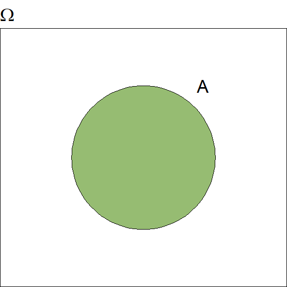
Los eventos pueden ser clasificados en:
- Simple: se da cuando el evento tiene un solo resultado o punto muestral.
Ejemplo
Considere el experimento de lanzar un dado convencional de 6 caras. \(A\) es el evento en el cual se saca un número 3 en el dado. \[A=\{3\}\]
- Compuesto: se da cuando el evento tiene más de un resultado o punto muestral. Estos resultados pueden ser dependientes o independientes.
Ejemplo
Considere el experimento de lanzar un dado convencional de 6 caras. \(B\) es el evento en el cual se saca un número primo en el dado. \[A=\{2,3,5\}\]
- Imposible: se da cuando el evento no puede ocurrir dentro del espacio muestral. El evento se denota entonces por el símbolo \(\emptyset\) que representa al conjunto vacío.
Ejemplo
Considere el experimento de lanzar un dado convencional de 6 caras. \(C\) es el evento en el cual se saca un 8 en el dado. \[A=\{\emptyset\}\]
Teoría de conjuntos
Dado que un evento puede estar compuesto por un conjunto de datos, las relaciones y resultados de la teoría de conjuntos, pueden ser utilizados para solucionar problemas de probabilidad. Por ello definimos como:
- Subconjunto: Sean dos eventos \(A\) y \(B\). Si los elementos de un evento están contenidos en el otro, se llama subconjunto. \(A \subset B\): \(A\) está contenido en \(B\), o \(B \subset A\): \(B\) contiene \(A\).

- Conjuntos Equivalentes: Si \(A \subset B\) y \(B \subset A\) entonces \(A=B\).
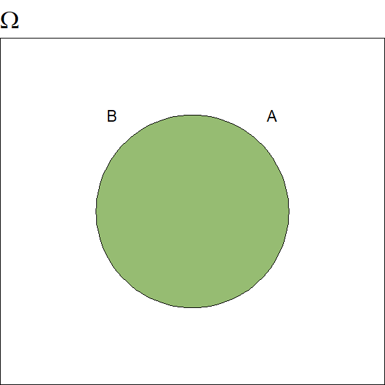
Conjunto Vacío: Si \(A\) no contienen elementos se llama vacío o nulo y se denota como \(\emptyset\).
Complemento: El complemento de un evento \(A\) respecto al espacio \(\Omega\), son los elementos que están en \(\Omega\) pero no en \(A\), se denota como \(\bar{A}\), \(A^c\), \(A^{\prime}\) o \(\Omega - A\).

- Intersección: Sean dos eventos \((A, B) \in \Omega\), cuando todos los elementos están contenidos en \(A\) y \(B\) se le llama intersección de eventos \(A \cap B\).

- Unión: Sean dos eventos \((A, B) \in \Omega\), cuando todos los elementos están contenidos en \(A\) o \(B\) o en ambos, se le llama unión de eventos. \(A \cup B=A+B-A\cap B\)

- Diferencia de Conjuntos: Sean dos eventos \((A, B) \in \Omega\), todos los elementos de \(A\) que no se encuentran en \(B\) determina la diferencia de conjuntos \(A-B\).

Teoremas de eventos
- Ley conmutativa: \(\{A \cup B=B\cup A\}\), \(\{A \cap B = B \cap A\}\)
- Ley asociativa: \(\{A \cup (B \cup C)=(A \cup B) \cup C\}\), \(\{A \cap (B \cap C)=(A \cap B) \cap C\}\)
- Ley distributiva: \(\{A \cap (B \cup C)=(A \cap B) \cup (A \cap C)\}\), \(\{A \cup (B \cap C)=(A \cup B) \cap (A \cup C)\}\)
- \(\overline{(\bar{A})}=(A^\prime)^\prime=A\)
- \(\{A \Omega= A\}\), \(\{A \cup \Omega = \Omega\}\), \(\{A\emptyset=\emptyset\}\), \(\{A \cup \emptyset=A\}\)
- \(\{A\bar{A}=\emptyset\}\), \(\{A \cup \bar A=\Omega\}\), \(\{A \cap A=A\}\), \(\{A \cup A=A\}\)
- \(\{\overline{A\cup B}=\bar A \cap \bar B\}\), \(\{\overline{A\cap B}=\bar A \cup \bar B\}\)
- \(A-B=A\bar B\)
- Ley de Morgan.
- \(\overline{\bigcup_{\lambda \in \Lambda}A_\lambda}=\bigcap_{\lambda\in\Lambda}\bar{A_\lambda}\)
- \(\overline{\bigcap_{\lambda \in \Lambda}A_\lambda}=\bigcup_{\lambda\in\Lambda}\bar{A_\lambda}\)
- Si \((A, B) \in \Omega\) entonces \(\{A=AB \cup A\bar B\}\) y \(\{AB \cap A\bar B=\emptyset\}\).
- Si \(A \subset B\) entonces \(AB=A\) y \(A\cup B=B\).
Disyunción o Eventos Mutuamente Excluyentes
Sean \((A, B) \in \Omega\), los eventos son disjuntos si \(A \cap B=\emptyset\). En general una colección de eventos \(A_1, A_2,...\) son mutuamente excluyentes si \(A_i \cap A_j = \emptyset, \: \forall i \neq j\).
Probabilidad a priori
Sea \(A \in \Omega\) la probabilidad de ocurrencia del evento \(A\) se define como:
\[P(A)=\cfrac{\text{# Casos favorables}}{\text{# Casos posibles}}\]
Don Ramiro todos los días juega chance, apuesta los número 8845, 1254 y 6743. Como hoy es Martes, él sabe que la semana pasada el número ganador fue 9654. ¿Cuál es la probabilidad de ganar el chance con sus números? Como “ya cayó” el 9654 ¿justifica no jugarlo?
Suponga una bolsa que contiene 10 bolas, de las cuales 3 son negras, 5 son azules, y 2 son verdes. Si se saca una bola al azar de la bolsa. Cuál es la probabilidad de que sea:
Negra
Azul
Roja
Verde
Negra o Azul
No sea Negra y No sea Roja
Axiomas de probabilidad
- Sea \(A \in \Omega\) entonces \(P(A) \ge 0\)
- \(P(\Omega)=1\).
- Sean \((A, B) \in \Omega\) eventos mutuamente excluyentes, entonces \(P(A \cup B)=P(A)+P(B)\).
- Si \(\Omega\) está compuesto de infinitos conjuntos o eventos.
- Si \(A_1 \supset A_2 \supset A_3 \supset ...\) y \(\bigcap_{n=1}^{\infty} A_n =\emptyset\) entonces \(\text{lim}_{n \to \infty} P(A_n)=0\).
- Sean \(A_1, A_2, A_3,... \in \Omega\) si \(A_i \cap A_j = \emptyset, \: \forall i\neq j\) entonces \(P(\bigcup_{i=1}^{\infty}A_i)=\sum_{i=1}^{\infty}P(A_i)\).
- Si \(A_1 \supset A_2 \supset A_3 \supset ...\) y \(\bigcap_{n=1}^{\infty} A_n =\emptyset\) entonces \(\text{lim}_{n \to \infty} P(A_n)=0\).
Propiedades
- \(P(A^\prime)=1-P(A)\)
- \(P(\emptyset)=0\)
- Si \(A \subset B \Rightarrow P(A) \le P(B)\)
- Para cualquier evento \(A\), se cumple \(0 \leq P(A)\leq 1\)
- \(P(A\cup B)=P(A)+P(B)-P(A \cap B)\)
Se lanza un dado. ¿Cual es la probabilidad de el resultado sea 2 o 5?
A: Evento que el resultado es 2
B: Evento que el resultado es 5
\[P(A \cup B)=P(A)+P(B)=\cfrac{1}{6}+\cfrac{1}{6}=\cfrac{1}{3}\]
En un lote de 50 bombillas hay 2 bombillas que presentan fallas. Un inspector examina 5 bombillas, las cuales fueron seleccionadas al azar y sin reemplazo. ¿Cuál es la probabilidad de que al menos 1 de las bombillas es defectuosa entre las 5 examinadas?
A: Evento de tener todas las bombillas nuevas
\[P(A^\prime)=1-P(A)\] \[P(A)=\cfrac{{48\choose 5} {2\choose 0}}{50 \choose 5}=0.8082\] \[P(A^\prime)=1-P(A)=1-0.8082=0.1918\]
Una mano de cartas consiste en 5 cartas elegidas al azar y sin reemplazo de una baraja de 52 cartas. ¿Cuál es la probabilidad de que en la mano resulten 3 corazones y 2 picas?
A: Evento de obtener 3 corazones y 2 picas \[P(A)=\cfrac{{13\choose 3} {13\choose 2}}{52 \choose 5}=0.0086\]
Probabilidad Condicional
Algunas veces la ocurrencia de un envento \(A\) puede afectar la ocurrencia posterior de otro evento \(B\). Suponga un grupo de 20 artículos que contiene 10 defectuosos y 10 que no lo son. Una persona selecciona un artículo al azar y lo instala en un equipo.
A: evento en que la selección del artículo resulte defectuoso \[P(A)=\cfrac{10}{20}=0.5\]
Ahora bien, suponga que se selecciona otro artículo de los 19 restantes.
B: evento en que la selección del segundo artículo resulte defectuoso
| Si el primero es defectuoso | Si el primero no es defectuoso |
|---|---|
| \[P(B)=\cfrac{9}{19}\] | \[P(B)=\cfrac{10}{19}\] |
Sean \((A, B) \in \Omega\), la probabilidad condicional \(A\) dado \(B\) denotado como \(P(A|B)\) se define como:
\[P(A|B)=\frac{P(A \cap B)}{P(B)} \:\:\:\text{donde}\:\:P(B)>0\] \[P(B|A)=\frac{P(A \cap B)}{P(A)} \:\:\:\text{donde}\:\:P(A)>0\]
En un grupo de estudiantes, el 40% de los alumnos juega al fútbol, el 30% al baloncesto y el 10% practica ambos deportes: Si juega fútbol, ¿cuál es la probabilidad de que juegue baloncesto?
\[P(B|F)=\frac{P(B \cap F)}{P(F)}=\frac{0.1}{0.4}=0.25\]
Suponga que se realiza un estudio en la Facultad de Ingeniería Industrial, en donde se le pregunta a sus estudiantes, en cuál deporte preferirían practicar entre Fútbol, Baloncesto, Voleibol y Tenis. Dicha pregunta se le realiza a un total de 400 estudiantes, encontrando los siguientes resultados
| Fútbol | Baloncesto | Voleibol | Tenis | |
|---|---|---|---|---|
| Administración de empresas | 48 | 27 | 22 | 23 |
| Contaduría | 34 | 41 | 25 | 10 |
| Economía | 66 | 51 | 13 | 40 |
A partir de la tabla anterior
Construya una tabla de probabilidades.
¿Cuál es la probabilidad de que se seleccione un estudiante que prefiera el Fútbol sobre los otros deportes?
¿Cuál es la probabilidad de que se seleccione un estudiante que estudie Contaduría?
¿Cuál es la probabilidad de que se seleccione un estudiante que estudie Economía y prefiera el Tenis sobre los demás deportes?
Si se selecciona un estudiante de Contaduría, ¿Cuál es la probabilidad de que prefiera el Voleibol sobre los otros deportes?
¿Cual es la probabilidad de que un estudiante sea de Economía, si se sabe que prefiere el Baloncesto sobre los otros deportes?
Regla Multiplicativa
\[P(A \cap B)=P(A)P(B|A)=P(B)P(A|B)\]
Una bolsa contiene seis pelotas rojas y cuatro azules, una segunda contiene siete rojas y dos azules. El experimento consiste en seleccionar una pelota al azar de la primera bolsa y colocarla dentro de la segunda bolsa. Seguidamente se selecciona una de la segunda bolsa y se coloca en la primera bolsa.
Cuál es la probabilidad de que se seleccione una pelota roja de la primera bolsa y una roja de la segunda bolsa?
Para resolver tal problema podemos emplear lo conocido como un Diagrama de Árbol el cual consta de gráficas todos los posibles resultados, de la siguiente forma

Entonces, si observamos el diagrama de árbol, podemos apreciar que la probabilidad de que se saque una bola roja de la primera bolsa (primer paso) es de
\[P(R_1)=\frac{6}{10}\]
mientras que la probabilidad de sacar una bola roja de la segunda bolsa (segundo paso) es de
\[P(R_2|R_1)=\frac{8}{10}\]
Y por tanto, al aplicar la regla multiplicativa, tenemos que la probabilidad de sacar una bola roja de la primera bolsa, introducirla en la segunda bolsa, y posteriormente sacar una bola roja de la segunda bolsa, es de
\[P(R_1 \cap R_2)=P(R_1)P(R_2|R_1)=\frac{6}{10}\times\frac{8}{10}=\frac{48}{100}=0.48\]
Independencia entre eventos
Si un experimento estadístico pueden ocurrir dos eventos A y B que son independientes entre si, entonces
\[P(A|B)=P(A)\quad\text{o}\quad P(B|A)=P(B)\]
lo cual es equivalente a
\[P(A\cap B)=P(A)P(B)\]
Una bolsa contiene 100 pelotas, de las cuales 25 son rojas, 40 son azules y 35 son negras. Si se seleccionan dos pelotas, ¿Cuál es la probabilidad de que la primera sea negra y la segunda sea azul, si la primera pelota se reemplaza antes de sacar la segunda? Las probabilidades son independientes?
Dado que la selección de las pelotas se realiza con reemplazo, tendremos que la probabilidad de un paso a otro permanecerá constante entre todas las pelotas, por ejemplo, si se saca una bola negra en el primer paso, entonces se registrará su color, se volverá a introducir en la bolsa, y posteriormente se realizará el segundo paso, asegurando que la probabilidad que tendrán todas las bolas de ser seleccionadas permanezca invariable, respecto a las probabilidades iniciales. Dado lo anterior tendremos el siguiente escenario
Para realizar el cálculo de la probabilidad de sacar una bola negra en el primer paso y una bola azul en el segundo paso, con reemplazo, se tendrá que
\[\begin{align*} P(N_1 \cap A_2) &=P(N_1)P(A_2|N_1)\\\\ &=\frac{35}{100}\times \frac{40}{100}\\\\ &=\frac{1400}{10000}\\\\ &=0.14 \end{align*}\]
Encontrando entonces que la probabilidad de sacar una bola Negra en el primer paso y una bola azul en el segundo paso es del 14%. Ahora, para saber si los eventos planteados son o no independientes, podemos centrarnos en la primera linea, en donde tenemos que la probabilidad de sacar una bola negra es de \(P(N_1)=35/100\), mientras que la probabilidad de sacar una bola azul es de \(P(A_1)=40/100\), y en consecuencia, al verificar la formula asociada a independencia entre eventos, tendremos que
\[\begin{align*} P(N_1 \cap A_2) &=P(N_1)P(A_2|N_1)\\\\ P(N_1) P(A_2) &=P(N_1)P(A_2|N_1)\\\\ \frac{1400}{10000} &=\frac{35}{100}\times \frac{40}{100}\\\\ \frac{1400}{10000} &=\frac{1400}{10000}\\\\ 0.14 &=0.14 \end{align*}\]
Y por tanto, al verificar que la igualdad se cumple, se concluye que los eventos son independientes.
Teorema Probabilidad Total
Sean \(B_1, B_2,...,B_k\) eventos mutuamente excluyentes \((B_i \cap B_j =\emptyset, \forall i \neq j)\) y exhaustivos \(\left(\bigcup_{i=1}^k B_i = \Omega\right)\), entonces para cualquier evento \(A\) se cumple:
\[P(A)=P(A\cap B_1)+P(A\cap B_2)+\dots+P(A\cap B_k)\]
o alternativamente, al aplicar la formula de la Regla multiplicativa, tenemos que
\[P(A)=\sum_{j=1}^{n}P(A \cap B_j)=\sum_{j=1}^{n}P(B_j)P(A|B_j)\]
En una obra se tienen tres mezcladoras exclusivas para losas \(M_1\), \(M_2\) y \(M_3\), las cuales preparan el 30%, 45% y 25% de las mezclas respectivamente. Se sabe por experiencia que el 4%, 5% y 2% de las losas presentan fisuras después del periódo de secado según la mezcla que entrega la máquina respectivamente. Si se inspecciona de forma aleatoria una losa, ¿Cuál es la probabilidad de que presente fisuras?
Definamos los eventos:
\(A\): La losa presenta fisura.
\(M_1\): la mezcla fue preaparada por la máquina 1.
\(M_2\): la mezcla fue preaparada por la máquina 2.
\(M_3\): la mezcla fue preaparada por la máquina 3.
Dado que el interés radica en encontrar la probabilidad de que se seleccione una loza y presente fisuras, entonces nos están pidiendo que se desea calcular la \(P(A)\).
Como entre la información dada en el enunciado no nos da la probabilidad de que una losa se encuentre fisurada, entonces podemos tratar de calcularla mediante el teorema de probabilidad total, aprovechando que los eventos \(M_1\), \(M_2\), \(M_3\) son eventos mutuamente excluyentes (Una mezcla para losa, no puede ser realizada simultáneamente entre máquinas), exhaustivos (El total de las losas, solo puede ser mezcladas por alguna de estas tres máquinas) y que nos están dando las probabilidades de los eventos \(A|M_1\), \(A|M_2\) y \(A|M_3\).
Partiendo de esto tenemos las siguientes probabilidades:
\[P(M_1)=0.30 \quad P(M_2)=0.45\quad P(M_3)=0.25\\ P(A|M_1)=0.04 \quad P(A|M_2)=0.05\quad P(A|M_3)=0.02\]
Entonces, al aplicar el teorema de probabilidad total, tendremos que
\[\begin{align*} P(A) &=P(M_1)P(A|M_1)+P(M_2)P(A|M_2)+P(M_3)P(A|M_3)\\ &=0.30\times0.04 + 0.45\times0.05+ 0.25\times0.02\\ &=0.0395 \end{align*}\]
Por tanto, la probabilidad de que una losa mezclada por cualquier máquina presente fisuras después del periódo de secado es del 3.95%.
Teorema de Bayes
Sea \(\{A_i\}_{i=1}^{n}\) un conjunto de \(n\) eventos cada uno con probabilidad positiva, además son mutuamente excluyentes. Para cualquier evento \(B \in \Omega\) con \(P(B)>0\) se cumple:
\[P(A_j|B)=\frac{P(A_j \cap B)}{P(B) }=\frac{P(B|A_j)P(A_j)}{\sum_{i=1}^{n}P(A_j)P(B|A_j)}=\frac{\text{Regla Multiplicativa}}{\text{Probabilidad Total}}\]
Esto nos permite hallar probabilidades de los diferentes sucesos que pueden causar la ocurrencia \(B\). Por esta razón con frecuencia se hace referencia al Teorema de Bayes como el teorema sobre la probabilidad de causas.
La caja \(I\) contiene 3 bolas rojas y 2 azules en tanto que la caja \(II\) contiene 2 bolas rojas y 8 azules. Se lanza una moneda. Si se obtiene cara se saca una bola de la caja \(I\); si se obtiene sello se saca una bola de la caja \(II\). Supóngase que quien lánza la moneda no revela si resulta cara o sello (de tal forma que la caja de la cual se sacó la bola no se revela), pero revela que se sacó una bola roja. ¿Cuál es la probabilidad de que se escogiera la caja \(I\) (es decir que el resultado de la moneda sea cara)?
Los eventos son:
\(R\) indica el suceso de sacar una bola roja.
\(I\) indica la selección de la caja 1.
\(II\) indica la selección de la caja 2.
Buscamos la probabilidad de que se escoja la caja \(I\) y se conoce se sacó una bola roja.
\[\begin{align*} P(I|R) &=\frac{P(I)P(R|I)}{P(I)P(R|I)+P(II)P(R|II)}\\\\ &=\frac{(1/2)(3/5)}{(1/2)(3/5)+(1/2)(2/10)}\\\\ &=\frac{3/10}{4/10} = \frac{3}{4} = 0.75 \end{align*}\]
Variables Aleatorias
En la mayoría de problemas a los que comúnmente nos enfrentamos, la descripción del conjunto de posibles resultados de un experimento aleatorio puede ser complicado y por lo tanto el cálculo de probabilidades también se dificulta.
Por ejemplo, si una persona es seleccionada de una población, diversas características pueden ser de interés y cada una aporta al entendimiento de un fenómeno en especial, como son, el tiempo que emplea en transportarse de su casa al lugar de trabajo, que tan lejos está de su casa el sitio donde trabaja, cuantos hijos tiene, cuantas horas duerme, cuantas personas conforman su grupo familiar, cuanto gana, cuanto gasta, cuanto paga por servicios, cuantas llamadas hace diariamente, etc.
Una Variable Aleatoria es una función definida en un Espacio Muestral que asigna a cada resultado de un experimento aleatorio un valor real. Usualmente son denotadas con letras mayúsculas como (\(X\), \(Y\), \(Z\), \(T\), etc). Al conjunto de todos los posibles resultados de una variable aleatoria se le llamará Rango de la variable (\(A_X\)).
Variables Aleatorias Discretas
Un grupo de \(n\) sujetos es sometido a cierto tratamiento y después de un tiempo se registra cuantos logran mejorar con dicho tratamiento. Sea X la variable aleatoria que cuenta cuántos sujetos mejoran con el tratamiento. Entonces el rango de \(X\) será \(A_X = {0, 1, 2,..., n}\).
En una gran población se encuestan de manera aleatoria sujetos hasta encontrar el primero que responde afirmativamente a una pregunta de interés. Si \(X\) es la variable aleatoria que cuenta el número de sujetos encuestados hasta encontrar el primero que responde afirmativamente, entonces el rango de \(X\) está dado por \(A_X = {1, 2, 3,...}\).
Este tipo de variables se traducen en funciones matemáticas o valores tabulados, y la probabilidad se calcula a través de la función de masa de probabilidad (f.m.p). Sea la variable aleatoria discreta \(X\), para cualquier resultado posible de \(X\) se cumple que:
- \(p(x)\geq0\) para todo \(x\) en el rango de \(X\).
- \(\sum_x p(x)=1\)
- \(p(x)=P(X=x)\)
Suponga un experimento aleatorio que consta en consultar una familia conformada por 3 hijos, en donde, se asume que la probabilidad de ser niño o niña es la misma. Si se define la variable aleatoria \(X\), el número de niñas que hay en la familia.
Sea \(H\) la letra que representa que el miembro de la familia es niño y \(M\) para denotar que el miembro de la familia es niña, entonces, se tendrá que el espacio muestral se define como \[\Omega=\{HHH,HHM,HMH,MHH,HMM,MHM,MMH,MMM\}\] Como el interés de la variable aleatoria \(X\) radica en el número de niñas que hay en la familia, se tendrá entonces que a partir del espacio muestral \(\Omega\) se puede contar el número de éxitos que hay en cada situación asignando los valores \(0\), \(1\), \(2\) y \(3\) a la variable aleatoria \(X\).
Para encontrar la función de probabilidades del experimento aleatorio asociadas a la variable aleatoria \(X\), podemos emplear la definición de la probabilidad a priori, aprovechando que todos los puntos del espacio muestral poseen la misma probabilidad. En otro caso podríamos emplear un diagrama de árbol para encontrar dichas probabilidades.
Para el caso de \(X=0\), observamos que de las \(8\) posibles situaciones que hay dentro del espacio muestral \(\Omega\), solo tenemos una situación en donde no hay ninguna mujer, y en consecuencia, al aplicar la definición de probabilidad a priori, se tendrá que la probabilidad de que \(X=0\), es: \[P(X=0)=\frac{1}{8}\] Procedimiento similar se aplica para \(X=1\), \(X=2\) y \(X=3\), obteniendo como resultado la siguiente tabla de probabilidades:
\(X\) \(0\) \(1\) \(2\) \(3\) \(p(x)\) \(\frac{1}{8}\) \(\frac{3}{8}\) \(\frac{3}{8}\) \(\frac{1}{8}\) Para calcular la probabilidad de que en una familia que posee tres hijos, hayan 2 o más niñas entonces se aplica la suma de probabilidades. \[P(X \geq 2)=\sum_{x=2}^{3} p(x)=p(2)+p(3)=\frac{3}{8}+\frac{1}{8}=\frac{1}{2}\]
Función de distribución acumulada caso discreto
La función de distribución acumulada (f.d.a) denotada por \(F(x)\), para una variable aleatoria discreta \(X\) con distribución de probabilidad \(p(x)\) es de la forma
\[F(x)=P(X\leq x)=∑_{t\leq x} p(t)\quad −\infty<x<\infty\]
para cualquier \(x\) dentro del rango de \(X\), \(F(x)\) será la suma acumulada de todos los valores de rango de \(X\) menores a \(x\).
Nota: Si se quieren calcular probabilidades con la función de distribución acumulada en el caso discreto, entonces, si \(a\) y \(b\) son dos números constantes enteras, deberán tenerse en cuenta las siguientes reglas
- \(P(a\leq X\leq b)=F(b)−F(a−1)\)
- \(P(a<X\leq b)=F(b)−F(a)\)
- \(P(a\leq X<b)=F(b−1)−F(a−1)\)
- \(P(a<X<b)=F(b−1)−F(a)\)
- \(P(X \geq a)=1-P(X < a)=1−F(a−1)\)
- \(P(X>a)=1-P(X\leq a)=1−F(a)\)
- \(P(X\leq b)=F(b)\)
- \(P(X<b)=F(b−1)\)
Basado en el ejemplo anterior, calculemos la función de distribución acumulada \(F(x)\) y calculemos la probabilidad de que en una familia que posee tres hijos, hayan 2 o más niñas.
A partir de la tabla donde se define la función de masa de probabilidad se procede a realizar el cálculo de la función de distribución acumulada \(F(x)\). Para ello, debemos calcular las siguientes probabilidades. \[\begin{align*} F(0) =& P(X\leq 0)=p(0)=1/8\\\\ F(1) =& P(X\leq 1)=p(0)+p(1)=4/8\\\\ F(2) =& P(X\leq 2)=p(0)+p(1)+p(2)=7/8\\\\ F(3) =& P(X\leq 3)=p(0)+p(1)+p(2)+p(3)=8/8 \end{align*}\] Entonces, mediante el empleo de estas probabilidades, podemos construir la función de distribución acumulada para la variable aleatoria \(X\), tal que \[\begin{align*} F(x) = \begin{cases} 0 & x<0 \\ \frac{1}{8} & 0\leq x<1 \\ \frac{4}{8} & 1\leq x<2 \\ \frac{7}{8} & 2\leq x<3 \\ \frac{8}{8} & x\geq 3 \end{cases} \end{align*}\] Dado que el interés es calcular la probabilidad de que el número de niñas sea mayor a \(1\) pero no más de \(2\), entonces se tendrá que la probabilidad de interés es la siguiente \[P(1 < X \leq 2)\] Entonces, siguiendo las reglas anteriormente expuestas, dicha probabilidad puede calcularse mediante \[\begin{align*} P(X \geq 2) & = 1 - F(2-1) \\ & = 1 - F(1) \\ & = 1 - \frac{4}{8}\\ & = \frac{4}{8} = \frac{1}{2} \end{align*}\] y por tanto, se tendrá que la probabilidad de que en una familia de \(3\) hijos, tengan \(2\) o más niñas es de 50%.
Es usual que en ejercicios de estadística o en preguntas de investigación se manifieste en palabras los símbolos de comparación o relación para el cálculo de probabilidades
\(\quad = \qquad\) Igual; Exactamente
\(\quad < \qquad\) Menor que; Inferior a
\(\quad > \qquad\) Mayor que; Superior a
\(\quad \leq \qquad\) A lo más; No mas de; A lo sumo, Máximo; Menor o igual que
\(\quad \geq \qquad\) Al menos; No menos de; Mínimo; Menor igual que
Variables Aleatorias Continuas
De la producción diaria de jabones se escoge uno al azar y se mide su pH. Sea \(X\): el pH del jabón. El rango de la variable aleatoria \(X\) es cualquier valor entre 0 y 14. Así: \(A_X = [0 , 14]\).
El desgaste de una llanta en un período de un año es una variable aleatoria. Si \(X\) es la variable aleatoria que representa el desgaste en décimas de milímetros, \(A_X = (0 , a)\), donde \(a\) representa la profundidad mínima de la llanta estando nueva.
Este tipo de variables se caracteriza porque el rango es un intervalo real, y su comportamiento está determinado por una función matemática y la probabilidad se calcula através de la función de densidad de probabilidad (p.d.f). Se dice que la función \(f(x)\) es una función de densidad de probabilidad (fdp) de la variable aleatoria continua \(X\), definida en el conjunto de números reales si:
- \(f(x)\geq0\) para todo \(x\) en los Reales
- \(\int_{-\infty}^{\infty} f(x)dx=1\)
- \(\int_b^a f(x)dx=P(a<X<b)\)
- \(P(x<X<x)=\int_x^x f(x)dx =0\)
Sea \(X\) una variable aleatoria continua. Entonces una función de probabilidad de \(X\) es una función \(f(x)\) tal que para dos números cualesquiera \(a\) y \(b\) con \(a\leq b\).
\[P(a \leq X \leq b)=\int_a^b f(x)\,dx\]
Es decir, la probabilidad de que \(X\) asuma un valor en el intervalo \([a; b]\) es el área bajo la curva de la densidad de probabilidad. La gráfica de \(f(x)\) se conoce como curva de densidad.
Función de distribución acumulada caso continuo
La función de distribución acumulada (fda) denotada por \(F(x)\), para una variable aleatoria continua \(X\) con distribución de probabilidad \(f(x)\) es de la forma
\[F(x)=P(X\leq x)=\int_{-\infty}^x f(t)dt\]
para cualquier \(x\), \(F(x)\) es el área izquierda bajo la curva de densidad.

Nota: Si se quieren calcular probabilidades con la función de distribución acumulada en el caso continuo, entonces, si \(a\) y \(b\) son dos números constantes, deberán tenerse en cuenta las siguientes reglas
- \(P(a\leq X\leq b)=F(b)−F(a)\)
- \(P(X\geq a)=1−F(a)\)
- \(P(X\leq b)=F(b)\)
Nota: Recordar que en el caso continuo, las probabilidad con o sin la igualdad son equivalentes, y por tanto, solo se escriben las tres reglas anteriores para generalizar todos los casos.
Valor Esperado
El Valor Esperado (o Esperanza Matemática) de una variable aleatoria es un concepto muy importante en el estudio de las distribuciones de probabilidad. La esperanza de una v.a tiene sus orígenes en los juegos de azar, pues los apostadores deseaban saber cuál era su esperanza de ganar repetidamente un juego.
Para v.a se entendería como el valor promedio de \(X\) después de un número grande de experimentos. Es un valor de posición que denota el centro de masa de la distribución. Si \(X\) es una variable aleatoria (discreta o continua) con fmp \(p(x)\) o fdp \(f(x)\), entonces la media o valor esperado de la variable aleatoria se denota por \(E[X]\) o \(\mu\) está dada por
\[E[X] = \begin{cases} \sum_{x} x p(x) &; \quad \text{Si X es Discreta}\\ \\ \int\limits_{-\infty}^{+\infty} x f(x) &; \quad \text{Si X es Continua}\\ \end{cases}\]
El valor esperado del número de niñas que hay en una familia que posee 3 hijos sería: \[\begin{align*} E[X]&=\sum_{0}^3x\,p(x) \\\\ &=0\,p(0)+1\,p(1)+2\,p(2)+3\,p(3) \\\\ &=0\left(\frac{1}{8}\right)+1\left(\frac{3}{8}\right)+2\left(\frac{3}{8}\right)+3\left(\frac{1}{8}\right) \\\\ &=0+\frac{3}{8}+\frac{6}{8}+\frac{3}{8} \\\\ &=\frac{12}{8} \\\\ &=1.5 \end{align*}\] es decir, se tedrá que en una familia que posea \(3\) hijos, se espera encontrar que el número promedio de niñas será de \(1.5\) niñas.
Propiedades
Sea \(a\) y \(b\) dos números constantes (reales) y \(X\) una variable aleatoria, entonces se tiene que
- \(E[a]=a\)
- \(E[X+b]=E[X]+b\)
- \(E[aX]=aE[X]\)
- si \(g(X)\) es una función de \(X\), entonces
\[E[g(X)] = \begin{cases} \sum_{x} g(x)p(x) &; \quad \text{Si X es Discreta}\\ \\ \int\limits_{-\infty}^{+\infty} g(x)f(x) &; \quad \text{Si X es Continua}\\ \end{cases}\]
Varianza
Sea \(X\) una variable aleatoria (discreta p continua) con fmp \(p(x)\) o pdf \(f(x)\), entonces si \(g(X) = (X - E[X])^2\), entonces \(E[g(X)]\) será la varianza de \(X\) que se denota \(Var[X]\) o \(\sigma^2\) estará dada por
\[Var[X] = E\left\{\left(X-E[X]\right)^2\right\}=E[X^2]-E[X]^2\]
además, la raíz cuadrada de la varianza de \(X\) se llama desviación estándar de \(X\), se denota por \(SD[X]\) o \(\sigma\) y se define como
\[SD[X] = \sqrt{Var[X]}\]
La desviación estándar del número de niñas que hay en una familia que posee 3 hijos requiere del cálculo de la varianza, entonces primero se debe calcular \(E(X^2)\): \[\begin{align*} E[X^2]&=\sum_{0}^3x^2\,p(x) \\\\ &=0^2\,p(0)+1^2\,p(1)+2^2\,p(2)+3^2\,p(3) \\\\ &=0\left(\frac{1}{8}\right)+1\left(\frac{3}{8}\right)+4\left(\frac{3}{8}\right)+9\left(\frac{1}{8}\right) \\\\ &=0+\frac{3}{8}+\frac{12}{8}+\frac{9}{8} \\\\ &=\frac{24}{8} \\\\ &=3 \end{align*}\] Entonces la varianza es: \[\begin{align*} Var[X]&=E[X^2] - E[X]^2 \\ &=3 - (1.5)^2 \\ &=3 - 2.25 \\ &=0.75 \end{align*}\] Por lo tanto la desviación estándar es \(SD[X]=\sqrt{0.75}=0.8660\). Es decir, se tendrá que el número promedio de niñas que tiene una familia que posee \(3\) hijos es de \(1.5\) niñas, con una desviación estándar de \(0.8660\) niñas.
Propiedades
- \(Var[X]=E[X^2]-E[X]^2\)
- \(Var[a]=0\), donde \(a\in\mathbb{R}\)
- \(Var[aX+b]=a^2Var[x]\), donde \(a,b \in\mathbb{R}\)
Distribuciones de probabilidad
Por muchos años los matemáticos y estadísticos han establecido funciones de probabilidad a diversos fenómenos de la naturaleza y la sociedad. No obstante, en algunos casos se observa que se cumplen ciertos patrones, por lo tanto, el comportamiento de un fenómeno se puede modelar con la misma función de probabilidad de otro fenómeno. En este sentido, se establecen las distribuciones de probabilidad como funciones definidas para entender el comportamiento de fenómenos que tienen un patrón identificable.
Distribuciones de Probabilidad Discretas
Distribución Binomial
Proceso de Bernoulli
Una secuencia de ensayos de Bernoulli forma un proceso de Bernoulli, si se cumplen las siguientes condiciones:
1. En cada ensayo ocurre uno de dos posibles resultados, mutuamente excluyentes. Uno de los posibles resultados se denota (arbitrariamente) como un exito y el otro, como fracaso.
2. La probabilidad de un exito, denotado por \(p\), permanece constante de un ensayo a otro, y la probabilidad de fracaso, \(1-p\), se denota con \(q\).
3. Los ensayos son independientes, es decir, el resultado de algún ensayo en particular no es afectado por el resultado de cualquier otro ensayo.
La distribución binomial es una distribución de probabilidad discreta que cuenta el número de éxitos en una secuencia de n ensayos de Bernoulli independientes entre sí, con una probabilidad fija p de ocurrencia del éxito entre los ensayos. Para \(n = 1\), la binomial se convierte, de hecho, en una distribución de Bernoulli.
\[p(x)={n \choose x}p^x(1-p)^{n-x}\quad x = \{0, 1, 2, \dots , n\}\]
Por notación \(X \sim Bin(n,p)\), además \(E[X]=np\) y \(VAR[X]=np(1-p)\).
Ejemplo
Suponga que en un estudio se encontró que 2 de cada 5 estudiantes no desea tomar clases virtuales. Si se selecciona aleatoriamente 20 estudiantes, ¿Cuál es la probabilidad de que no menos de 6 pero a lo sumo de 12 deseen tomar clases virtuales?
En este caso estamos interesados en la variable \(X\), que representa el número de estudiantes que desean tomar clases virtuales, en donde sabemos que si, 2 de cada 5 no quieren tomar clases virtuales, entonces se tendrá que 3 de cada 5 si desean tomar clases virtuales. Por tanto al aplicar la definición de frecuencia relativa se tiene que
\[p=\frac{\text{Número de éxitos}}{\text{Número de ensayos (muestras)}}=\frac{3}{5}=0.6\]
siendo \(p\) la probabilidad de que un estudiante desee tomar clases virtuales. Entonces la distribución de probabilidad es:
\[p(x)={20 \choose x}p^x(1-p)^{20-x}\quad x = \{0, 1, 2, \dots , 20\}\]
Ahora, se tiene interés en conocer la probabilidad de que no menos de 6 pero menos de 12 deseen tomar clases virtuales. En este caso, la probabilidad asociada puede calcularse de la siguiente manera.
\[\begin{align*} P(6 \leq x < 12) &= \sum_{x=6}^{11} \left(\begin{array}{c}20\\ x\end{array}\right)0.6^x(1-0.6)^{20-x} \\\\ &= \left(\begin{array}{c}20\\ 6\end{array}\right)0.6^6(0.4)^{20-6} + \ldots + \left(\begin{array}{c}20\\ 11\end{array}\right)0.6^{11}(0.4)^{20-11} \\\\ &= 0.4027898 \end{align*}\]
Es decir que, la probabilidad de que como mínimo 6 pero menos de 12 estudiantes deseen tomar clases virtuales de los 20 seleccionados, es del 40.28%. En R también se pueden calcular estas probabilidades con las funciones basadas en binom
rbinom: generanvalores aleatorios binomiales con tamañosizey probabilidadprobdbinom: calcula la probabilidad binomial exacta dexcon tamañosizey probabilidadprob.pbinom: calcula la probabilidad acumulada binomial deqcon tamañosizey probabilidadprob.qbinom: calcula el valor de \(x\) basado en la probabilidadpde una binomial con tamañosizey probabilidadprob.
## [1] 0.4027898## [1] 0.4027898
Distribución binomial con n=10, p=0.1
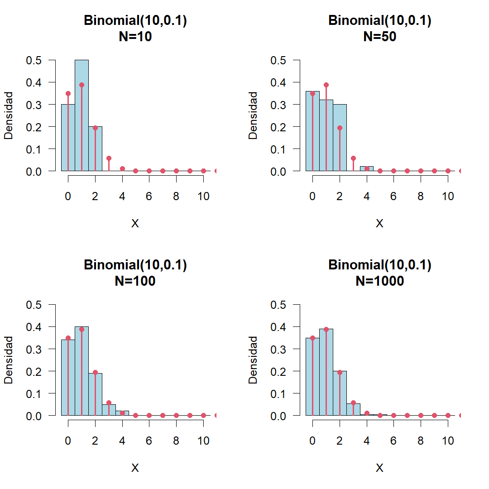
Se puede observar que para una distribución binomial con parámetro \(p < 0.5\) la distribución presenta asimetría hacia la izquierda. Por otra parte la distribución empírica se ajusta a la distribución teórica para tamaños de muestra grandes; para el caso de la distribución con parámetro \(p=0.1\), se observa que hay un buen ajuste para tamaños de muestra \(N \geq 50\).
Distribución Binomial con n=10, p=0.5
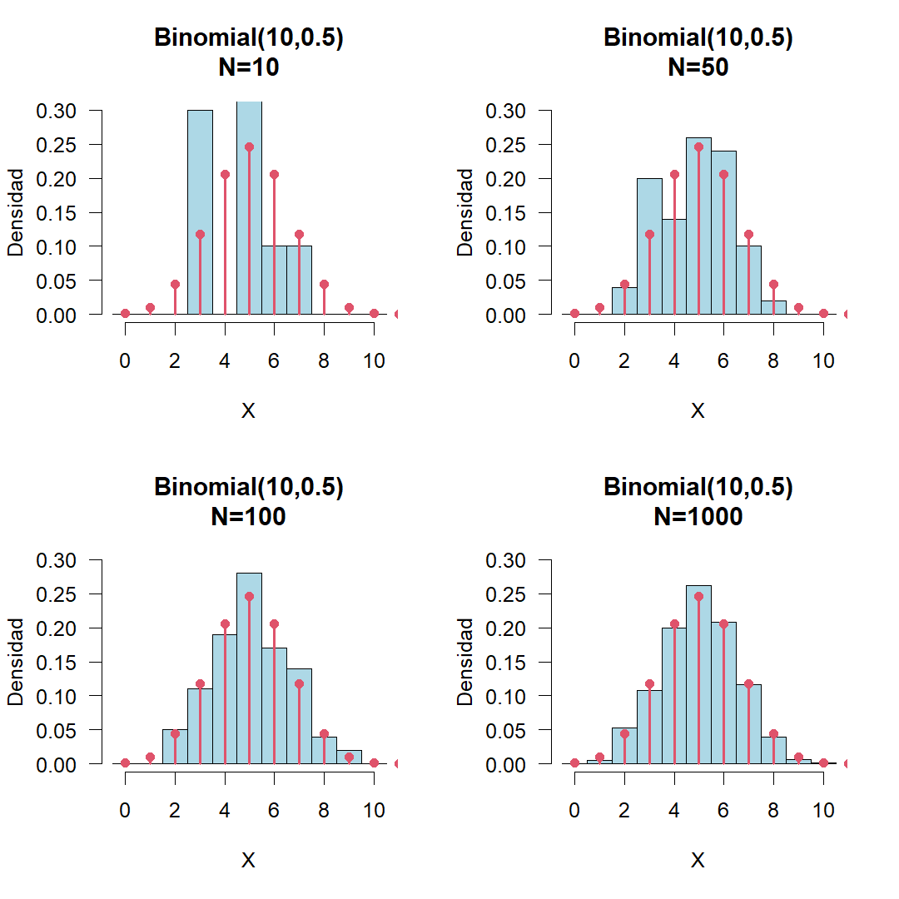
Se puede observar que para una distribución binomial con parámetro \(p = 0.5\) la distribución teórica es simétrica. Por otra parte la distribución empírica se ajusta a la distribución teórica para tamaños de muestra muy grandes; contrario al caso anterior, el ajuste es más lento y se require tamaños de muestra \(N \geq 1000\).
Distribución Binomial con n=10, p=0.9
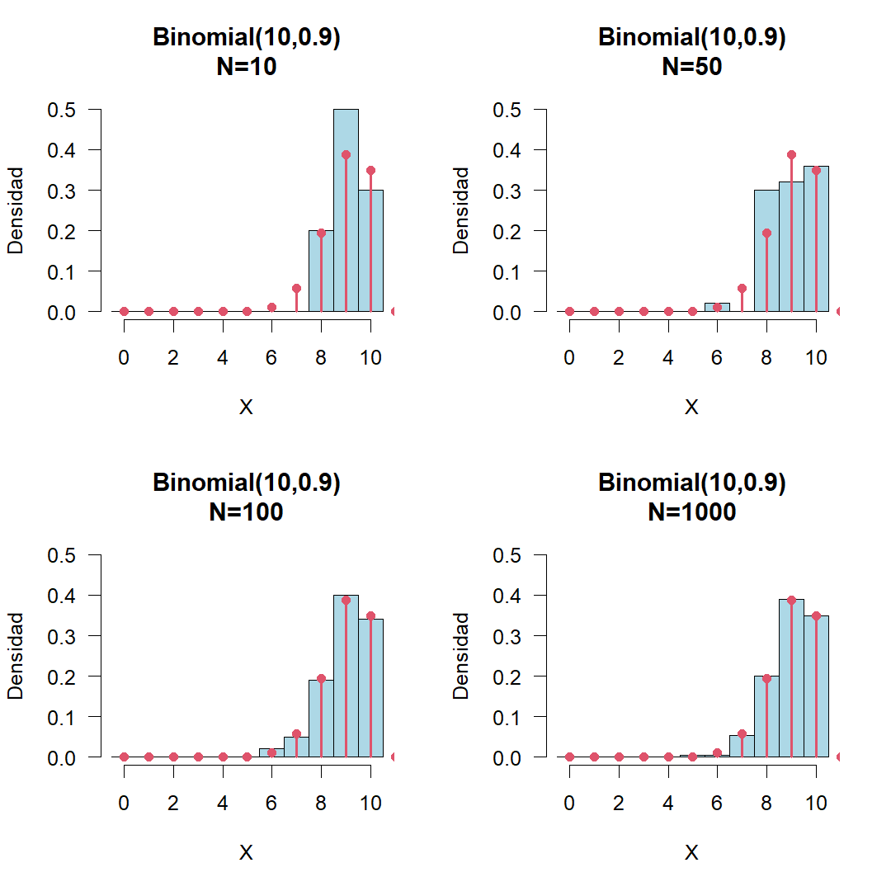
Se puede observar que para una distribución binomial con parámetro \(p > 0.5\) la distribución presenta asimetría hacia la derecha. Por otra parte la distribución empírica se ajusta a la distribución teórica para tamaños de muestra grandes; para el caso de la distribución con parámetro \(p=0.9\), se observa que hay un buen ajuste para tamaños de muestra \(N \geq 50\).
Distribución Poisson
Es otra distribución discreta de probabilidad muy útil en la que la variable aleatoria representa el número de eventos independientes que ocurren en un tiempo/espacio constante, por ejemplo: el número de accidentes en un cruce por hora, número de errores ortográficos por página, número de llamadas telefónicas a una central por minuto, número de imperfecciones en un material por \(cm^2\), número de huecos en una carretera por kilómetro, número de tarjetas amarillas en un partido.
Algunos de estos experimentos tienen características similares:
- El experimento consiste en contar el número de veces que ocurre un cierto evento de interés por unidad de tiempo o espacio.
- En cada unidad establecida, el número de eventos que ocurren es independiente de los que ocurren en otras unidades.
- Es posible asumir que la probabilidad de que un evento ocurra en una cierta unidad es la misma para todas las unidades de su tipo.
Dado un intervalo real, suponga que el conteo de ocurrencias es aleatorio en dicho intervalo. Si este intervalo puede sub-dividirse en sub-intervalos suficientemente pequeños tales que:
- La probabilidad de más de una ocurrencia en cada subintervalo es despreciable.
- La probabilidad de ocurrencia en un subintervalo es la misma para todos los subintevalos de la misma longitud y es proporcional a la longitud de dicho subintervalo.
- El conteo de ocurrencias en cada subintervalo es independiente del conteo de ocurrencias en los demás subintervalos.
Si un experimento cumple estas condiciones, es llamado Experimento Poisson. La variable aleatoria de interés será \(X:\) Número de ocurrencias en el intervalo real. Se dice que \(X\) tiene una distribución Poisson con parámetro \(\lambda\), donde \(\lambda\): representa el número promedio de ocurrencias por unidad de tiempo o espacio.
La distribución de Poisson es una distribución de probabilidad discreta que expresa, a partir de una frecuencia de ocurrencia media, la probabilidad de que ocurra un determinado número de eventos durante cierto período de tiempo. Concretamente, se especializa en la probabilidad de ocurrencia de sucesos con probabilidades muy pequeñas, o sucesos “raros”.
\[p(x;\lambda)=\frac{e^{-\lambda} \lambda^x}{x!}\qquad x=0,1,2,... \quad \lambda>0\] Por notación \(X \sim Pois(\lambda)\), además \(E[X]=\lambda\) y \(Var[X]=\lambda\).
Ejemplo
De acuerdo con @pedritonumeros el promedio de goles en la Bundes Liga es 3.06 goles por encuentro, cuando se reanude la liga ¿Cuál es la probabilidad de que en el primer partido se marquen 7 goles?. Si en el segundo partido se anotaron más de dos goles, ¿Cuál es la probabilidad que en el tercero marquen menos de 5?
Sea \(X\) la variable que representa el número de goles en un partido de la Bundes Liga, entonces de acuerdo a la información previa \(X \sim Pois(\lambda=3.06)\). La probabilidad de que en el primer partido se marquen 7 goles es:
\[\begin{align*} P(X=7)=&\frac{e^{-3.06}3.06^7}{7!}\\\\ =&\frac{(0.0468877)(2512.176)}{5040}\\\\ =&0.02337106 \end{align*}\]
Por lo tanto la probabilidad de que en el primer partido se marquen 7 goles es del 2.34%. Para el segundo caso se pide que en el tercer partido se marquen menos de 5 goles si en el segundo partido se anotaron más de dos goles, entonces se pide una probabilidad condicional. En un proceso poisson no influye los intervalos de tiempo, a menos que se amplie o disminuya el intervalo, en este caso se habla entre partidos, por lo tanto el parámetro \(\lambda\) sigue fijo para la distribución.
\[\begin{align*} P(X<5|X>2)=&\frac{P(2 < X < 5)}{P(X>2)}\\\\ =& \frac{P(3 \leq X \leq 4)}{1-P(X\leq2)}\\\\ =& \frac{\sum_3^4 \frac{e^{-3.06}3.06^x}{x!}}{1-\sum_0^2 \frac{e^{-3.06}3.06^x}{x!}}\\\\ =& \frac{p(3)+p(4)}{1-[p(0)+p(1)+p(2)]}\\\\ =& \frac{0.3951997}{1-0.4098829}\\\\ =& \frac{0.3951997}{0.5901171} = 0.669697 \end{align*}\]
Por lo tanto la probabilidad de que en el tercer partido se marquen menos de 5 goles dado que en el segundo se marcaron 2 es del 66.97%. En R también se pueden calcular estas probabilidades con las funciones basadas en pois
rpois: generanvalores aleatorios Poisson con parámetrolambda.dpois: calcula la probabilidad Poisson exacta dexcon parámetrolambda.ppois: calcula la probabilidad acumulada Poisson deqcon parámetrolambda.qpois: calcula el valor de \(x\) basado en la probabilidadpde una Poisson con parámetrolambda.
## [1] 0.02337106# solución 2
numerador <- dpois(3,3.06)+dpois(4,3.06)
denominador <- 1-ppois(2,3.06)
numerador/denominador## [1] 0.6696971
Distribución Poission \(\lambda=2\)
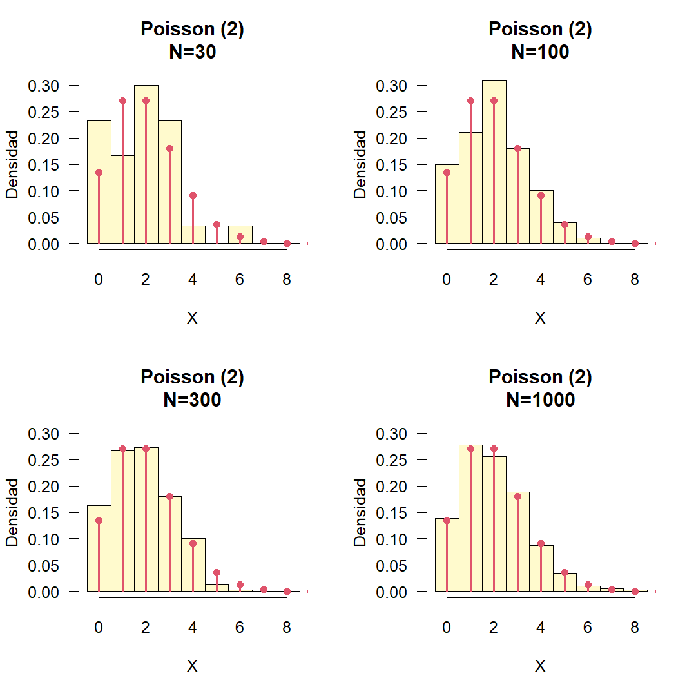
En el gráfico se evidencia que la distribución Poisson es asimétrica hacia la izquerda para valores del parámetro \(\lambda\) pequeños, además la distribución muestral se ajusta a la distribución teórica para tamaños de muestra \(N \geq 300\).
Distribución Poission \(\lambda=5\)
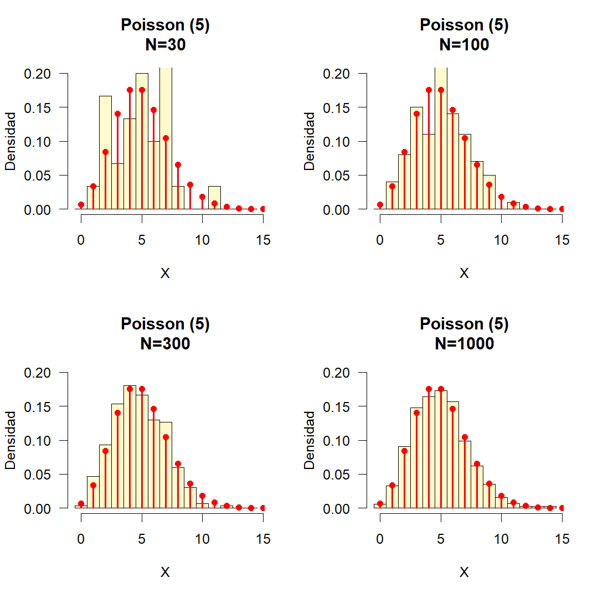
En el gráfico se evidencia que la distribución Poisson es asimétrica hacia la izquierda para valores del parámetro \(\lambda\) pequeños, sin embargo, a medida que aumenta el valor del parámetro, la distribución presenta cola hacia la izquierda, además la distribución muestral se ajusta a la distribución teórica para tamaños de muestra \(N \geq 300\).
Distribución Poission \(\lambda=10\)
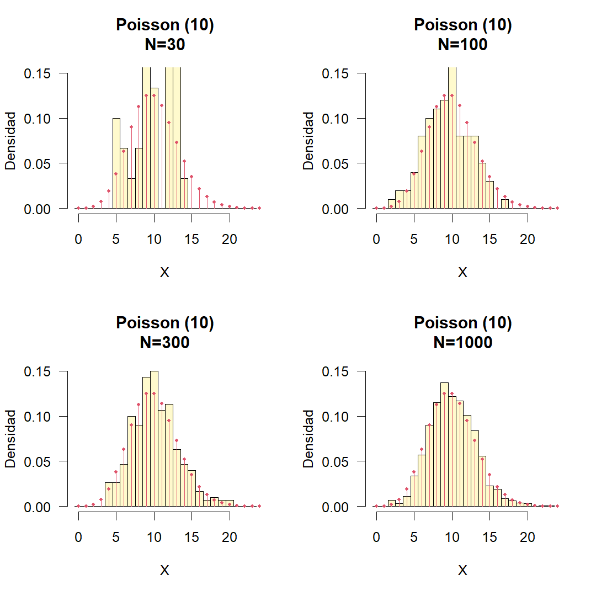
En el gráfico se evidencia que para valores grandes del parámetro \(\lambda\) la distribución Poisson se hace simétrica presentando colas hacia ambos lados de la distribución, además la distribución muestral se ajusta a la distribución teórica para tamaños de muestra \(N \geq 1000\).
Distribución Geométrica
La variable aleatoria geométrica representa el número de fallas que ocurren antes de que se presente el primer éxito. La función de masa de probabilidad está dada por:
\[p(x) = (1 - p)^{x-1}p\]
Distribución Geometrica con p=0.3
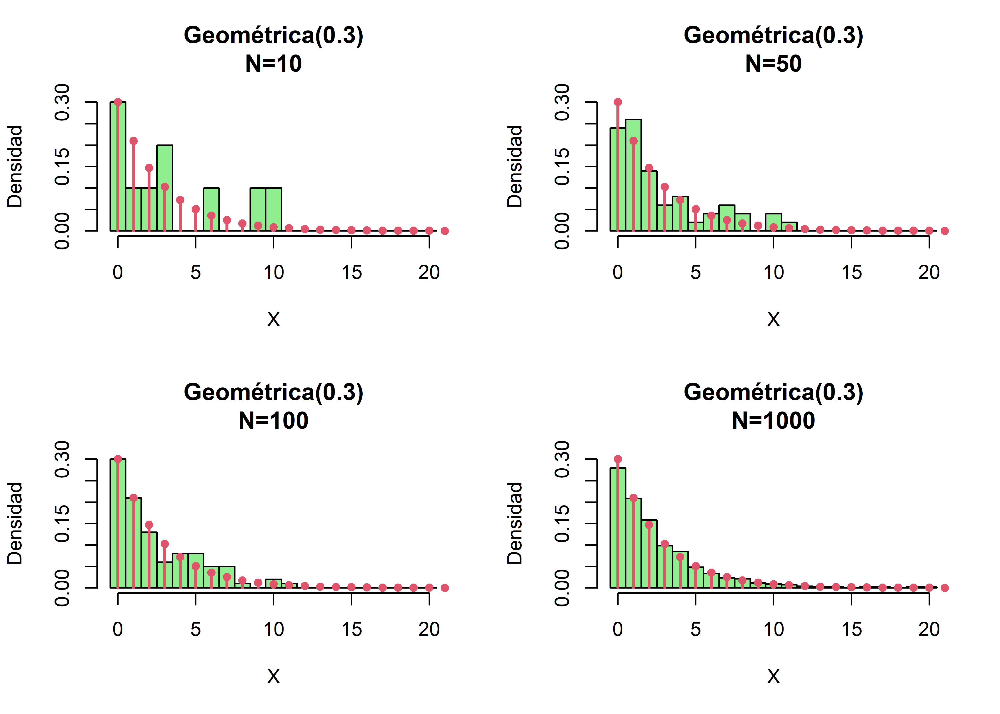
Se observa que la distribución teórica es asimétrica hacia la izquierda, pues cuenta el número de ensayos antes de obtener el primer éxito, por otra parte el número de ensayos aumenta cuando el parámetro p es pequeño, además la distribución empírica se ajusta a la teórica para tamaños de muestra grandes; en este caso la distribución con \(p=0.3\), el ajuste de la distribución se alcanza para tamaños de muestra \(N \geq 1000\)
Distribución Geometrica con p=0.5
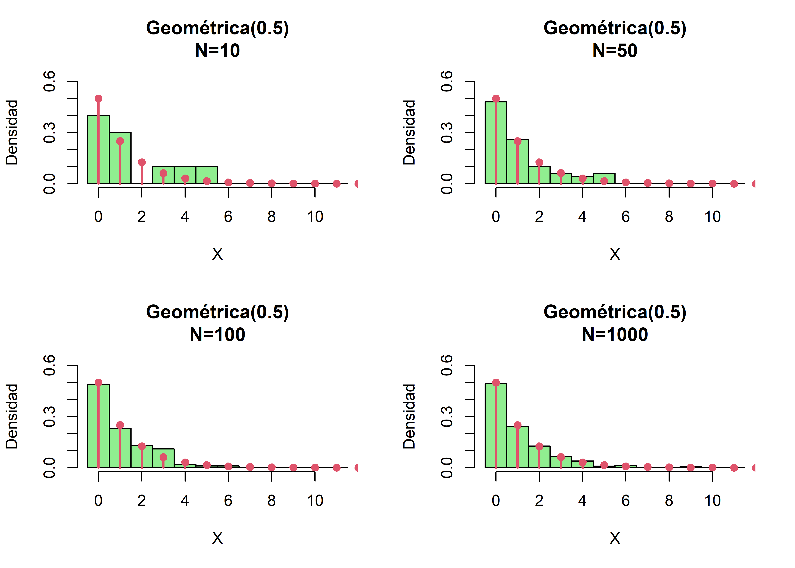
Se observa que la distribución teórica es asimétrica hacia la izquierda, pues cuenta el número de ensayos antes de obtener el primer éxito, por otra parte el número de ensayos aumenta cuando el parámetro p es pequeño, además la distribución empírica se ajusta a la teórica para tamaños de muestra grandes; en este caso la distribución con \(p=0.5\), el ajuste de la distribución se alcanza para tamaños de muestra \(N \geq 100\)
Distribución Geometrica con p=0.7
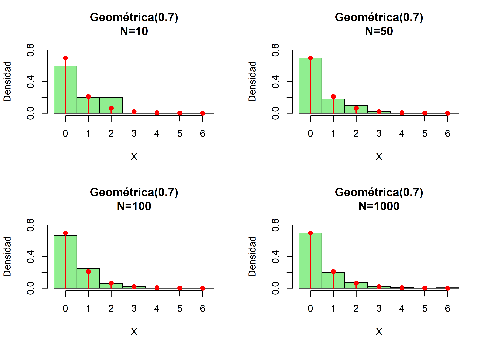
Se observa que la distribución teórica es asimétrica hacia la izquierda, pues cuenta el número de ensayos antes de obtener el primer éxito, por otra parte el número de ensayos disminuye cuando el parámetro p es grande, además la distribución empírica se ajusta a la teórica para tamaños de muestra grandes; en este caso la distribución con \(p=0.7\), el ajuste de la distribución se alcanza para tamaños de muestra \(N \geq 50\)
Distribución Binomial Negativa
Esta distribución puede considerarse como una extensión o ampliación de la distribución geométrica. La distribución binomial negativa es un modelo adecuado para tratar aquellos procesos en los que se repite un determinado ensayo o prueba hasta conseguir un número determinado de resultados favorables (por vez primera) .Es por tanto de gran utilidad para aquellos muestreos que procedan de esta manera. Si el número de resultados favorables buscados fuera 1 estaríamos en el caso de la distribución geométrica.
\[p(x)= {x-1 \choose x-k}p^k(1-p)^{x-k} = {x-1 \choose k-1}p^k(1-p)^{x-k}\]
Distribución Binomial Negativa con k=3 y p=0.3
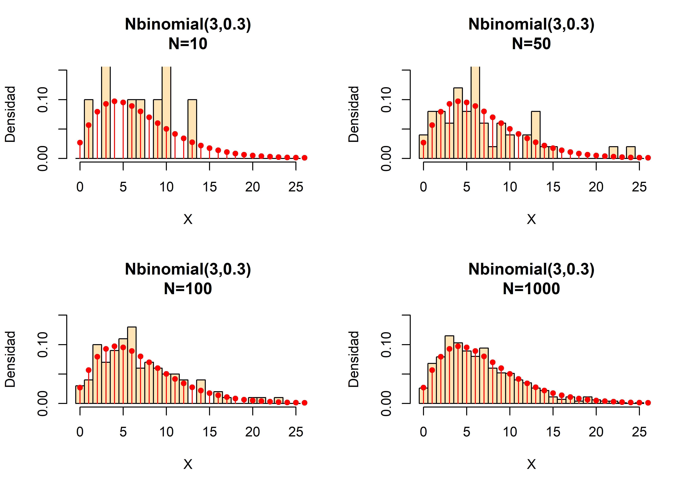
Se observa que la distribución empírica se ajusta a la teórica con tamaños de muestra grandes. En particular para un número de éxitos fijo \(k=3\), se observa que la distribución es asimétrica hacia la izquierda y con \(p=0.3\) la distribución empírica se ajusta con tamaños de muestra \(N \geq 1000\). Por otra parte, a medida que aumenta el parámetro p el número de ensayos disminuyen y la densidad de probabilidad aumenta.
Distribución Binomial Negativa con k=3 y p=0.5
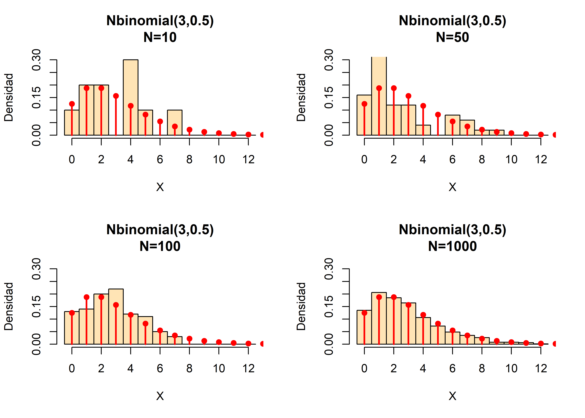
Se observa que la distribución empírica se ajusta a la teórica con tamaños de muestra grandes. En particular para un número de éxitos fijo \(k=3\), se observa que la distribución es asimétrica hacia la izquierda y con \(p=0.5\) la distribución empírica se ajusta con tamaños de muestra \(N \geq 1000\). Por otra parte, a medida que aumenta el parámetro p el número de ensayos disminuyen y la densidad de probabilidad aumenta.
Distribución Binomial Negativa con k=3 y p=0.7
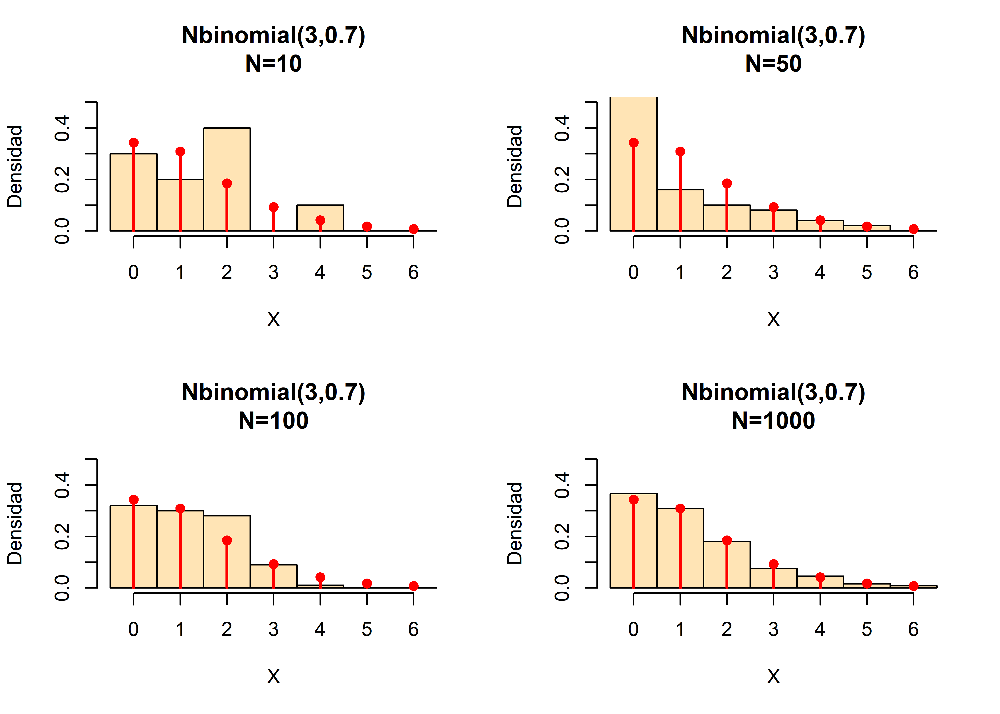
Se observa que la distribución empírica se ajusta a la teórica con tamaños de muestra grandes. En particular para un número de éxitos fijo \(k=3\), se observa que la distribución es asimétrica hacia la izquierda y con \(p=0.7\) la distribución empírica se ajusta con tamaños de muestra \(N \geq 1000\). Por otra parte, a medida que aumenta el parámetro p el número de ensayos disminuyen y la densidad de probabilidad aumenta.
Distribución Binomial Negativa con k=30 y p=[0.3,0.5,0.7]
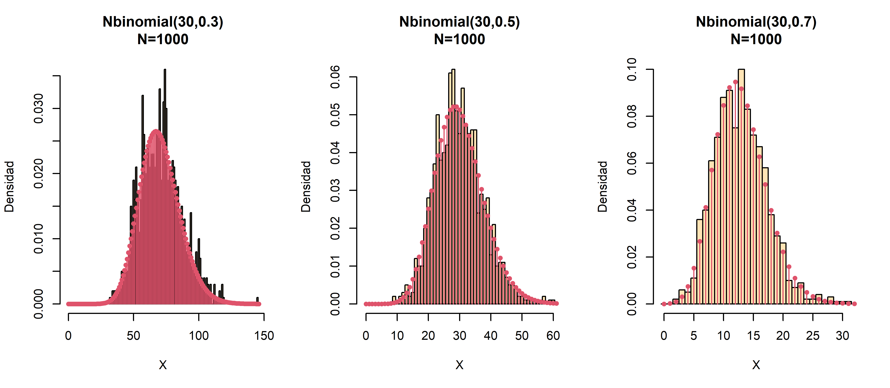
Se observa que la distribución empírica se ajusta a la teórica con tamaños de muestra grandes. Se puede observar que a medida que el parámetro p aumenta, disminuye el número de ensayos antes de obtener los k éxitos y aumenta la densidad de probabilidad; por otra parte cuando el parámetro k aumenta se observa la distribución tiende a ser simétrica.
Distribución Hipergeométrica
La distribución hipergeométrica es una distribución discreta que modela el número de eventos en una muestra de tamaño fijo cuando se conoce el número total de elementos en la población de la cual proviene la muestra. Las muestras no tienen reemplazo, por lo que cada elemento de la muestra es diferente. Cuando se elige un elemento de la población, no se puede volver a elegir. Por lo tanto, la probabilidad de que un elemento en particular sea seleccionado aumenta con cada ensayo, suponiendo que aún no ha sido seleccionado.
\[P(X=x)=\frac{{k \choose x}{{N-k \choose n-x}}}{{N \choose n}} \quad x=0,1,...,k\]
Donde \(N\) es el tamaño de población, \(n\) es el tamaño de la muestra extraída, \(k\) es el número de elementos en la población original que pertenecen a la categoría deseada y \(x\) es el número de elementos en la muestra que pertenecen a dicha categoría.
Distribución hipergeométrica \(N=80\) \(k=10\) \(n=10\)
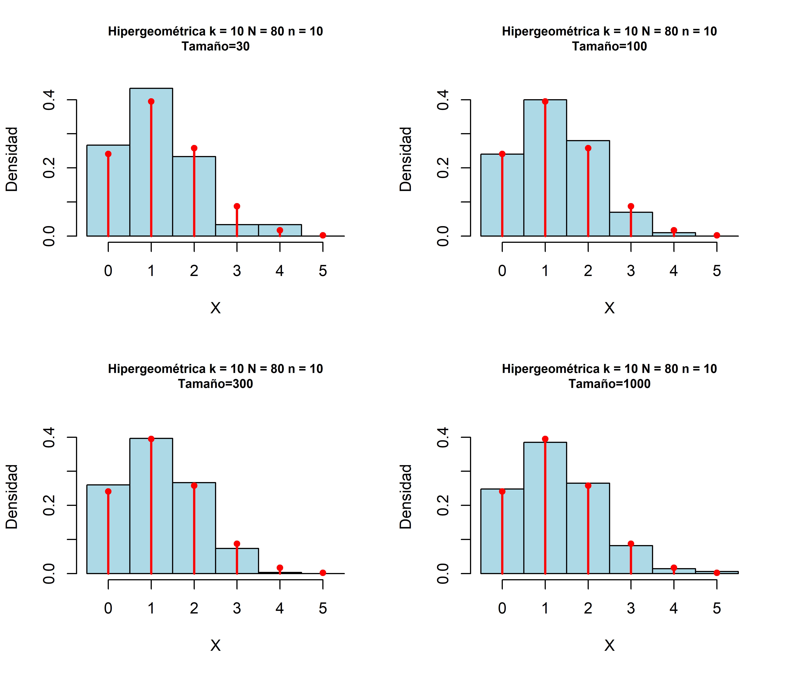
En el gráfico se ve que cuando el parámetro que denota el número de elementos de interés en la población original (\(k\)) es pequeño e igual a la muestra extraída (\(n\)), la distribución es asimétrica hacia la derecha, además a medida que el tamaño de muestra aumenta la distribución muestral se ajusta a la función de densidad con tamaños superiores a \(100\).
Distribución hipergeométrica \(N=60\) \(k=10\) \(n=25\)
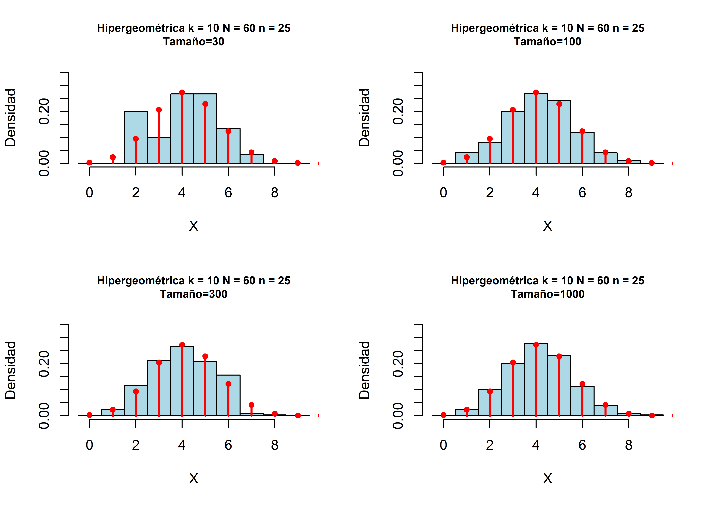
En el gráfico se ve que cuando el parámetro que denota el número de elementos de interés en la población original (\(k\)) es menor a la muestra extraída (\(n\)), la distribución tiende a ser simétrica, además a medida que el tamaño de muestra aumenta la distribución muestral se ajusta a la función de densidad con tamaños superiores a \(300\).
Distribución hipergeométrica \(N=60\) \(k=35\) \(n=25\)
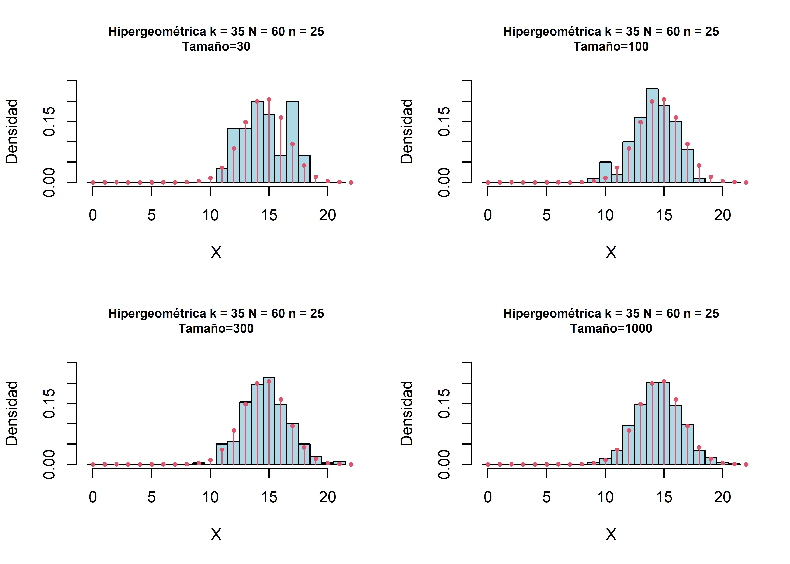
En el gráfico se ve que cuando el parámetro que denota el número de elementos de interés en la población original (\(k\)) es mayor a la muestra extraída (\(n\)), la distribución es asimétrica hacia la derecha, además a medida que el tamaño de muestra aumenta la distribución muestral se ajusta a la función de densidad con tamaños superiores a \(1000\).
Distribución Multinomial
La distribución multinomial es una generalización de la distribución binomial, la cual es la probabilidad de un número de éxitos en \(N\) sucesos de Bernoulli independientes, con la misma probabilidad de éxito en cada suceso. En una distribución multinomial, el análogo a la distribución de Bernoulli es la distribución categórica, donde cada suceso concluye en únicamente un resultado de un número finito \(K\) de los posibles, con probabilidades \(p_1, \dots , p_k\) (tal que \(p_i \geq 0\) para \(i\) entre \(1\) y \(K\) y \(\sum_{i=1}^k p_i = 1\)) y con \(n\) sucesos independientes.
Entonces sea la variable aleatoria \(x_i\), que indica el número de veces que se ha dado el resultado \(i\) sobre los n sucesos. El vector \(x=(x_1,..., x_k)\) sigue una distribución multinomial con parámetros \(n\) y \(p\), donde \(p=(p_1,...,p_k)\) la distribución multinomial es una generalización de la distribución binomial.
Para el caso de la distribución trinomial, la función de masa de probabilidad es:
\[ p(x,y) = { \displaystyle {n! \over x!y!(n-x-y)!}p_1^{x}p_2^{y}(1-p_1-p_2)^{n-x-y}}, \quad \mbox{cuando } x+y \leq n \]
Distribución Trinomial \(p_1=0.1\) \(p_2=0.8\) \(n=10\)
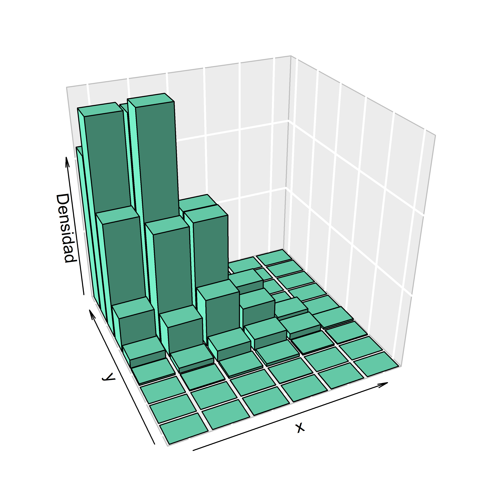
Por la ley de los grandes números se sabe que a medida que el tamaño de muestra aumenta la distribución empírica se ajusta a la distribución teórica. Para la distribución trinomial se evidencia que a medida que la probabilidad \(p_2\) aumenta, la densidad se recarga en valores altos para el eje \(y\) y en valores bajos para el eje \(x\).
Distribución Trinomial \(p_1=0.45\) \(p_2=0.45\) \(n=10\)
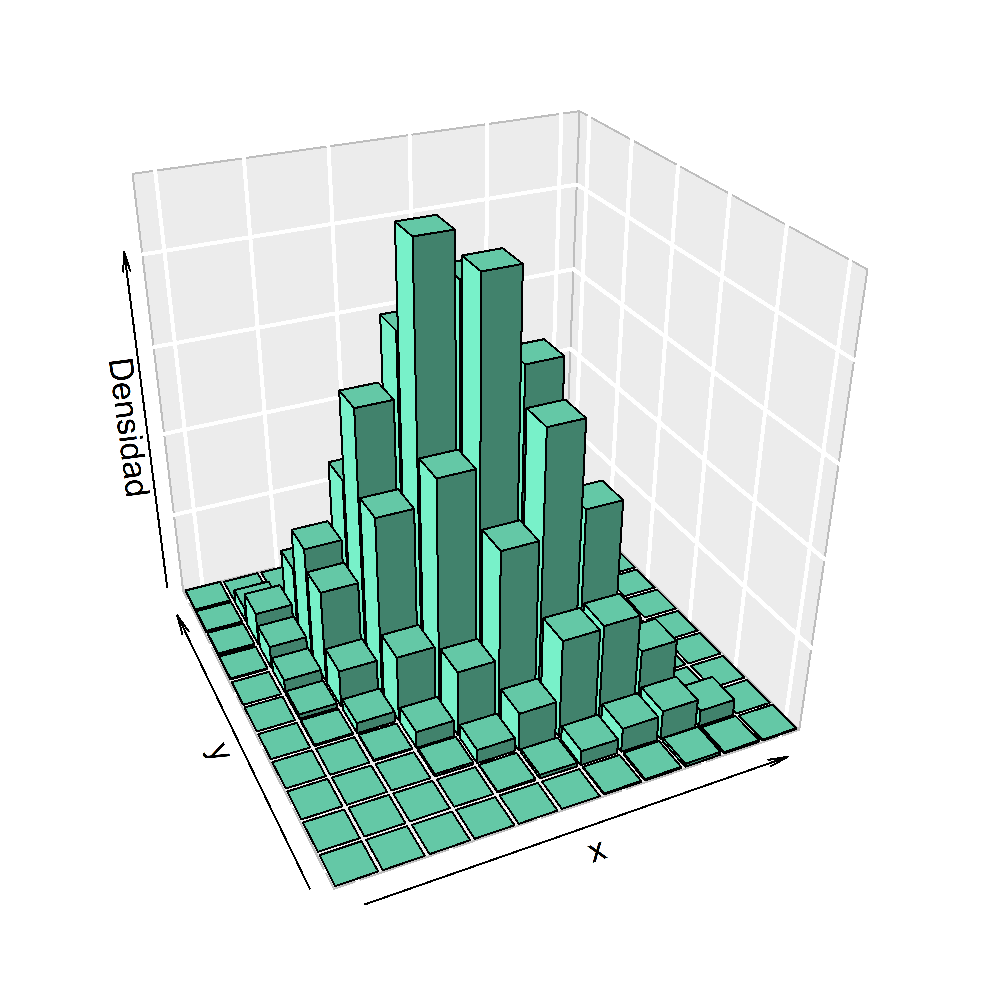
Por la ley de los grandes números se sabe que a medida que el tamaño de muestra aumenta la distribución empírica se ajusta a la distribución teórica. Para la distribución trinomial se evidencia que a medida que cuando la probabilidad \(p_2=p_1\), la densidad se recarga en el centro del plano \((x,y)\).
Distribución Trinomial \(p_1=0.8\) \(p_2=0.1\) \(n=10\)
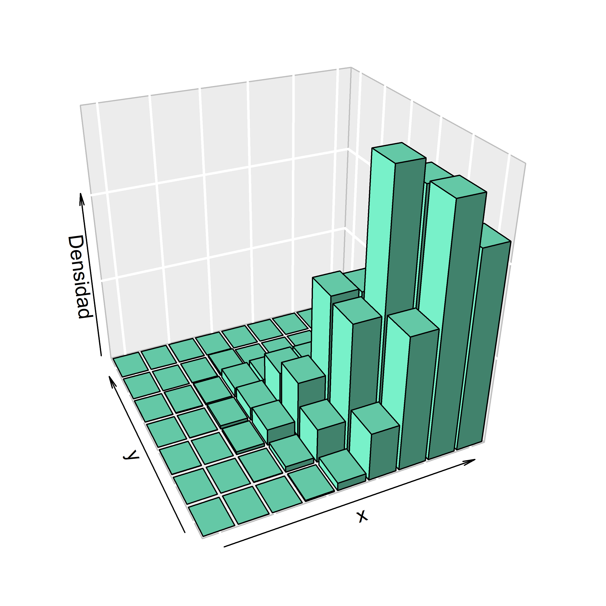
Por la ley de los grandes números se sabe que a medida que el tamaño de muestra aumenta la distribución empírica se ajusta a la distribución teórica. Para la distribución trinomial se evidencia que a medida que la probabilidad \(p_1\) aumenta, la densidad se recarga en valores altos para el eje \(x\) y en valores bajos para el eje \(y\).
Distribuciones de Probabilidad Continuas
Distribución Normal
La Distribución Normal o Gaussiana es indudablemente la más importante y la de mayor uso de todas las distribuciones de probabilidad continua. Es la piedra angular en la aplicación de la inferencia estadística en el analisis de datos, puesto que las distribuciones de muchas estadísticas muestrales tienden hacia la distribución normal conforme crece el tamaño de muestra.
- Precipitación pluvial
- Temperaturas
- Mediciones en organismos vivos
- Calificaciones de pruebas de actitud
- Mediciones físicas en manufactura
- Densidades
- Fuerza
- Errores de instrumentación
Debe tenerse mucho cuidado al suponer para una situación dada un modelo de probabilidad normal sin previa comprobación. Si bien es cierto que esta distribución es la de mayor uso, también es de la que más se abusa. Quizás por la mala interpretación de la palabra “normal”, especialmente si se aplica su significado literal de “patrón o estándar aceptado”.
Es posible que una distribución normal proporcione de manera razonable una aproximación alrededor de una media de una variable aleatoria; sin embargo, puede resultar que para valores extremos se encuentren en cualquier dirección. La apariencia gráfica de la distribución normal es una curva simétrica con forma de campana, que se extiende sin límite tanto en dirección positiva como negativa.
Sea \(X\) una variable aleatoria continua, se dice que \(X\) tiene una distribución normal si su f.d.p es de la forma:
\[f(x)=\cfrac{1}{\sqrt{2 \pi} \sigma} \mathit{e}^{- \frac{1}{2} \frac{(x-\mu)^2}{\sigma^2}};\qquad -\infty< x <\infty \quad \mu \in \mathit{R}\quad \sigma>0\]
Por notación \(X \sim N(\mu,\sigma^2)\). Los parámetros \(\mu\) y \(\sigma^2\) se les conoce de localización y escala, respectivamente. Las siguientes afirmaciones se cumplen para la variable aleatoria \(X\).
- El área abajo de curva normal comprendida entre \((−\infty, \infty)\) es igual a 1.
- La normal es simétrica respecto a \(\mu\). Como consecuencia de esto, el área bajo de la curva en el intervalo \([\mu, \infty)\) es igual a 0.5.
- La distribución normal tiene forma de campana.
- La normal queda completamente caracterizada con el conocimiento de sus parámetros de localización y de escala.
- La media es igual a la mediana y a su vez igual a la moda.
- En la práctica la normalidad se alcanza de manera aproximada.
- \(E[X]=\mu\) y \(Var[X]=\sigma^2\).
- Cuanto más grande es el parámetro \(\sigma^2\) el gráfico de la función es mas “achatada” y de colas más largas.

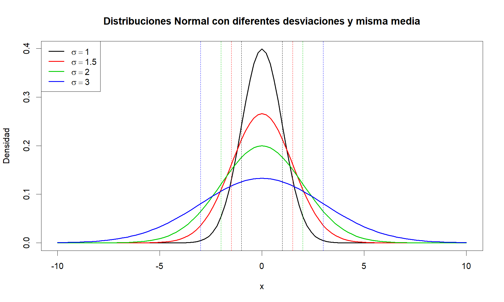
Normal Estándar
Cuando \(\mu=0\) y \(\sigma^2=1\), se obtiene una distribución normal especial, conocida como Normal Estándar y usualmente es denotada cola letra \(Z\) y se escribe \(Z \sim N(0,1)\).
\[P(x_1 < X < x_2)= \int\limits_{x_1}^{x_2} \cfrac{1}{\sqrt{2 \pi} \sigma} \large e^{- \frac{1}{2} \frac{(x-\mu)^2}{\sigma^2}} \small dx\]
Esta probabilidad no puede ser resuelta de manera explícita, además cada vez que se modifique \(\mu\) o \(\sigma^2\), se debe calcular de nuevo la integral.
Normalización
Para evitar este problema, se utiliza el cambio de variable \(Z=\frac{X-\mu}{\sigma}\), del cual se obtiene que \(dz=\frac{1}{\sigma}dx\).
\[ \begin{aligned} P(x_1 < X < x_2) &= \int\limits_{z_1}^{z_2} \cfrac{1}{\sqrt{2 \pi}} \mathit{e}^{- \cfrac{z^2}{2}} dz \\ &= P(z_1 < Z < z_2)\\ \end{aligned} \]
donde \(z_1=\frac{x_1-\mu}{\sigma}\) y \(z_2=\frac{x_2-\mu}{\sigma}\). Esto indica que cualquier cálculo de probabilidades para una variable aleatoria \(N(\mu, \sigma^2)\) puede reducirse al cálculo de probabilidades con una variable aleatoria \(N(0,1)\). El proceso de transformar una v.a normal en una normal estándar se conoce como Estandarización o Normalización.

Para el cálculo de probabilidades con una variable \(N(0, 1)\), la c.d.f. estará dada por:
\[\Phi(z)=P(Z \leq z)=\int\limits_{-\infty}^{z} \cfrac{1}{\sqrt{2 \pi}} \large e^{- \frac{z^2}{2}} \small dz\]
De esta manera se tiene que:
\[P(x_1 < X < x_2)=P(z_1 < Z < z_2)=\Phi(z_2)-\Phi(z_1)\]
Los valores de la función \(\Phi(z)\) están tabulados en casi todos los textos de estadística.
Cálculo de probabilidades
Sea \(Z\) una v.a tal que \(Z \sim N(0,1)\)
\(P(Z = z) = 0\)
\(P(Z>z)=1-P(Z \leq z)\)
\(P(Z<-z)=P(Z>z)\)
\(P(-z < Z < 0) = P(0 < Z < z)\)
\(P(Z < 0) = P(Z > 0) = \cfrac{1}{2}\)
\(P(-z_1 < Z < -z_2)=P(z_2 < Z < z_1)\)
Características Distribución Normal

Percentiles en una Normal Estándar
Sea \(0 < \alpha < 1\) y suponga que \(Z \sim N(0,1)\). El valor de \(Z\) que deja un área \(\alpha\) a la derecha se denota \(z_{\alpha}\). Es decir,
\[P(Z>z_{\alpha})=\alpha\]
\(z_{\alpha}\) es llamado percentil \(100(1-\alpha)\%\) de la distribución de \(Z\).

Ejemplo Manejo de la tabla
Suponga que poseemos una distribución normal estándar, tal que \(Z \sim N(0,1)\). Entonces, a partir de esta distribución y empleando la Tabla de la Distribución Normal Estándar, calcule:
- \(P(Z \leq 1.96)\)
- \(P(−2.42<Z \leq 0.24)\)
Para calcular probabilidades con la tabla de la distribución normal estándar, es necesario tener en cuenta el funcionamiento de la tabla misma, y para ello, se debe entender su funcionamiento. Y para ello se presenta la siguiente imagen.

En donde, se aprecia que, los cuadros rojos representan los valores críticos \(z\) que se emplea para calcular probabilidades, en donde, el cuadro rojo de la parte izquierda muestra la parte entera y el primer decimal, mientras que el cuadro rojo de la parte superior muestra el segundo decimal. El cuadro azul representa las probabilidades \(\alpha\) que se desean calcular a partir de los valores críticos. Finalmente, el cuadro azul claro representa el funcionamiento de la tabla , la cual muestra las probabilidades que poseen la forma \(P(Z<z)=\alpha\).
La primera probabilidad a calcular es \(P(Z\leq1.96)\). Entonces como esta probabilidad tiene la estructura establecida por la tabla \(P(Z\leq z)\), será cuestión de buscar el valor crítico 1.96 para localizar la probabilidad asociada, tal que se busca en la parte izquierda, el valor 1.9 y en la parte superior el valor 0.06, y en donde se encuentre el cruce de ambos valores, se encontrará el valor de la probabilidad asociada a 1.96. Dicho procedimiento se muestra en la siguiente imagen
Donde se aprecia que
\[P(Z\leq1.96)=0.9750\]
Para el segundo caso, se desea calcular la \(P(−2.42<Z\leq0.24)\), y se observa que la estructura de dicha probabilidad es diferente a la establecida por la tabla \(P(Z\leq z)\), pero también podemos apreciar que si aplicamos las propiedades de la función de distribución acumulada para el caso continuo, podemos llevar la probabilidad de interés a la forma
\[P(−2.42<Z\leq0.24)=P(Z\leq0.24)−P(Z\leq−2.42)\]
obteniendo que la probabilidad \(P(−2.42<Z\leq0.24)\), puede calcularse mediante el empleo de las probabilidades acumuladas \(P(Z\leq0.24)\) y \(P(Z\leq−2.42)\), las cuales pueden calcularse en la tabla de forma similar a los dos puntos anteriores.

Donde se aprecia que
\[P(Z\leq−2.42)=0.0078 \quad \text{y} \quad P(Z\leq0.24)=0.5948\]
y por tanto, se tendrá que
\[\begin{align*} P(−2.42<Z\leq0.24)=&P(Z\leq0.24)−P(Z\leq−2.42)\\ =&0.5948−0.0078\\ =&0.587 \end{align*}\]
Ejemplo
La resistencia promedio del concreto, obtenida por pruebas en laboratorio, tienen una distribución aproximadamente normal con una resistencia promedio de 31.5 MPa y una desviación estándar de 2 MPa. Si se desea que solo el 5% de todas las pruebas de resistencia sean menores que 30 MPa ¿Cuál debe ser la resistencia mínima para que esto sea posible?
Tenemos que \(X\) es la resistencia promedio del concreto y que \(X \sim N(31.5,2^2)\), para obtener el valor mínimo para que solo el 5% de las pruebas sean menores de 30 MPa, primero debemos estimar cuál es la probabilidad de que las resistencias sean menores a 30 MPa.
\[\begin{align*} P(X<30)=&P\left(\frac{X-31.5}{2}<\frac{30-31.5}{2}\right)\\\\ =&P(Z<-0.75)\\ =&1-P(Z \leq 0.75) = 0.2266 \end{align*}\]
Se espera que el 22.66% de las resistencias del concreto estén por debajo de 30 MPa. Sea \(K\) el valor de la resistencia mínima que satisface \(P (X < K) = 0.05\), es decir, el 5% de las resistencias del concreto tienen valores inferiores a \(K\).
\[\begin{align*} P(X<K)=0.05 \quad \Rightarrow \quad &P\left(\frac{X-31.5}{2}<\frac{K-31.5}{2}\right)=0.05\\\\ &P(Z<z)=0.05, \quad \text{con}\quad z=\frac{K-31.5}{2} \end{align*}\]
Usando la tabla de la normal se encuentra que valor de \(z\) para una probabilidad de \(0.05\) es \(-1.645\) entonces:
\[-1.645=\frac{K-31.5}{2} \quad \Rightarrow K=28.21\]
Así, la resistencia mínima del concreto será 28.21 MPa, para que solo el 5% esté por debajo de 30 MPa. En R también se pueden calcular estas probabilidades con las funciones basadas en norm
rnorm: generanvalores aleatorios Normales con mediamuy desviaciónsigma.dnorm: calcula la densidad Normal exacta dexcon mediamuy desviaciónsigma.pnorm: calcula la probabilidad acumulada Normal deqcon mediamuy desviaciónsigma.qnorm: calcula el valor de \(x\) basado en la probabilidadpde una Normal con mediamuy desviaciónsigma.
## [1] 0.2266274## [1] 0.2266274## [1] 28.21029## [1] 28.21029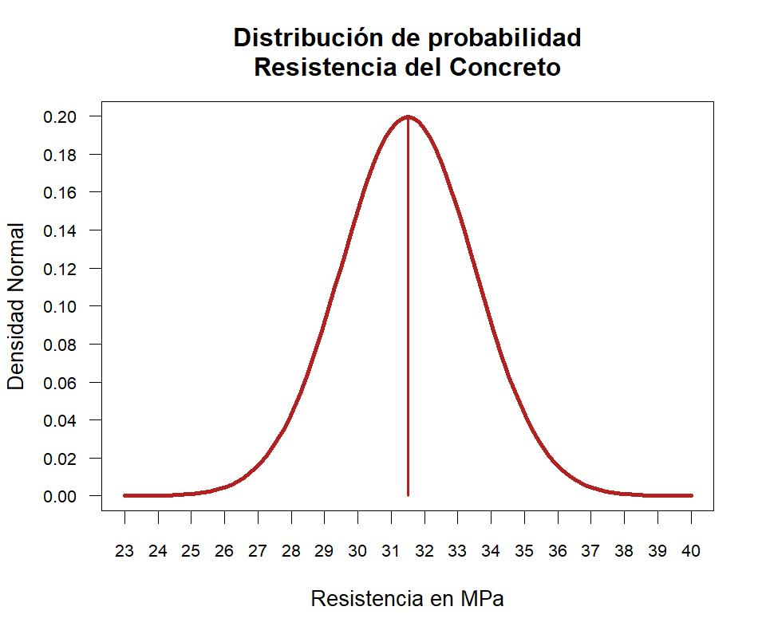
Distribución normal con \(\mu=0\) y \(\sigma=1\)

En el gráfico se evidencia que la distribución Normal es simétrica en \(\mu=0\), además la distribución muestral se ajusta a la distribución teórica para tamaños de muestra \(N \geq 100\).
Distribución normal con \(\mu=0\) y \(\sigma=5\)

En el gráfico se evidencia que la distribución Normal es simétrica en \(\mu=0\) y que debido a la varianza tan grande el rango de la variable aumenta considerablemente, además la distribución muestral se ajusta a la distribución teórica para tamaños de muestra \(N \geq 100\).
Distribución Uniforme
Sea \(X\) una v.a continua definida en el intervalo \((a,b)\) tal que \(\forall_I \subset (a,b)\) la \(P(X \in I)\) es proporcional a la longitud del intervalo.
Entonces se dice que \(X\) tiene una distribución uniforme en el intervalo \((a,b)\). Para hallar la p.d.f. de X, como la probabilidad de que X pertenezca a cualquier subintervalo de \((a,b)\) es proporcional a su longitud, necesariamente la p.d.f. de X es una función constante;
\[ f(x) = \begin{cases} k & ; \quad a<x<b\\ 0 & ; \quad \text{en otro caso}\\ \end{cases} \]
\[P(X \in (a,b))=k(b-a)=1 \Rightarrow k=\cfrac{1}{b-a}\]
De esta manera, la p.d.f. de la variable aleatoria X es de la forma:
\[ f(x) = \begin{cases} \cfrac{1}{b-a} & ; \quad a<x<b\\ \\ 0 & ; \quad \text{en otro caso}\\ \end{cases} \]
\[ F(x) = \begin{cases} 0 & ; \quad x<a \\\\ \cfrac{x-a}{b-a} & ; \quad a \leq x \leq b \\\\ 1 & ; \quad x>b\\ \end{cases} \]
Entonces \(X \sim U(a,b)\), además:
\[M_X(t)= \begin{cases} \cfrac{\large e^{tb}-\large e^{ta}}{t(a-b)} \quad t \neq 0 \\ \\ \quad \quad 1 \quad \quad \quad t=0 \\ \end{cases}\]
Así, \(E[X]=\cfrac{a+b}{2}\) y \(\text{Var}[X]=\cfrac{(b-a)^2}{12}\)
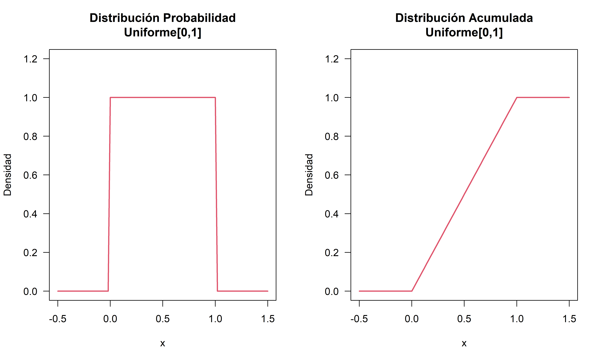
Distribución Exponencial
La distribución exponencial tiene una gran utilidad práctica ya que podemos considerarla como un modelo adecuado para la distribución de probabilidad del tiempo de espera entre dos hechos que sigan un proceso de Poisson. De hecho la distribución exponencial puede derivarse de un proceso experimental de Poisson con las mismas características que las que enunciábamos al estudiar la distribución de Poisson, pero tomando como variable aleatoria, en este caso, el tiempo que tarda en producirse un hecho.
Sea \(X\) una v.a continua. \(X \sim Exp(\lambda)\).
\[f(x) = \begin{cases} \lambda \mathit{e}^{-\lambda x} &;\qquad x > 0\\ 0 &;\qquad \text{en otro caso}\\ \end{cases}\]
La función generadora de momentos está dada por:
\[M_X(t)=E\left[ e^{tx}\right]=\cfrac{\lambda}{\lambda-t}\]
Así,\(E[X]=\frac{1}{\lambda}\) y \(\text{Var}[X]=\frac{1}{\lambda^2}\).
La función acumulada está dada por:
\[F(x) = \begin{cases} 1 - \mathit{e}^{-\lambda x} &;\qquad x \geq 0\\ 0 &;\qquad x < 0\\ \end{cases}\]
Por lo general en la distribución exponencial se da el tiempo promedio hasta la ocurrencia de un evento Poisson, es útil igualar el promedio a \(E[X]\) para hallar el parámetro \(\lambda\) despejando de la ecuación.
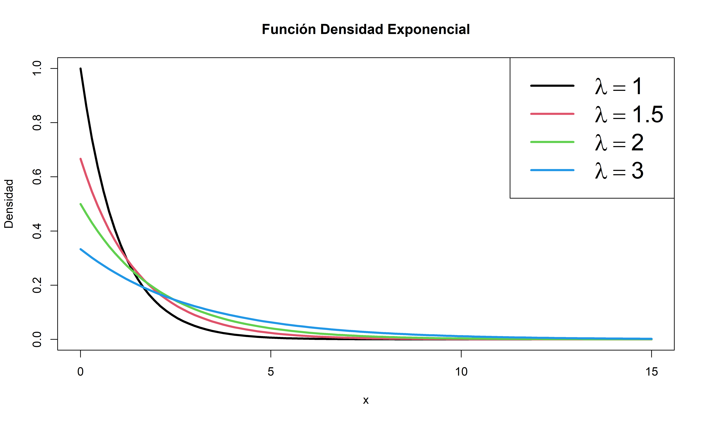
Ejemplo
Suponga que en horas pico el tiempo entre llegadas sucesiva de personas al ascensor de un conjunto residencial (edificio), posee una distribución Exponencial con un tiempo promedio de \(0.8\) minutos. Entonces, basados en ésto
Calcule la probabilidad de que la próxima persona en llegar al ascensor tarde más de 4 minutos?
Para calcular la probabilidad de que la próxima persona tarde más de 4 minutos en llegar al ascensor, debemos primero encontrar el valor del parámetro de la distribución Exponencial, en donde, nos dicen en el enunciado, que el tiempo promedio entre llegadas sucesivas es de \(0.8\) minutos, tal que
\[E[X]=\frac{1}{\lambda}=0.8\]
Entonces \(\lambda=1.25\). Ahora, con el valor de este parámetro podemos calcular la probabilidad de interés empleando la función de distribución acumulada Exponencial, tal que
\[\begin{align*} P(X>4)&=1-P(X\leq 4)\\ &=1-F(4)\\ &=1-[1 - \mathit{e}^{-\lambda 4}]\\ &=1-[1 - \mathit{e}^{-(1.25)(4)}]\\ &=\mathit{e}^{-5}\\ &=0.006737947 \end{align*}\]
Es decir que la probabilidad de que la próxima persona en llegar al ascensor tarde más de 4 minutos es de 0.67%.
Si han pasado 2 minutos y aún no llega ninguna persona al ascensor, cuál es la probabilidad de que la próxima persona tarde más de 4 minutos?
En esta ocasión estamos interesados en calcular una probabilidad condicional, en donde nos piden la probabilidad de que una persona tarde más de 4 minutos en llegar al ascensor, si se sabe que ya han pasado 2 minutos y aún no llega ningúna persona, es decir
\[\begin{align*} P(X>4|X>2) &= \frac{P(X>4 \cap X>2)}{P(X>2)}\\\\ &=\frac{P(X>4)}{P(X>2)}\\\\ &=\frac{1-P(X \leq 4)}{1-P(X\leq 2)}\\\\ &=\frac{1-F(4)}{1-F(2)}\\\\ &=\frac{1-[1 - \mathit{e}^{-(1.25)(4)}]}{1-[1 - \mathit{e}^{-(1.25)(2)}]}\\\\ &=\frac{\mathit{e}^{-5}}{\mathit{e}^{-2.5}}\\ &=\frac{0.006737947}{0.082085}\\ &=0.082085 \end{align*}\]
Y por tanto se tendrá una probabilidad de 8.21% de que la próxima persona que llega al ascensor tarde más de 4 minutos, dado que ya han pasado 2 minutos y aún no ha llegado ninguna persona.
Propiedad de carencia de memoria
Suponga que \(X\) es una variable aleatoria tal que \(X \sim Exp(\lambda)\). Sean \(t_1\) y \(t_2\) reales positivos. Entonces:
\[P(X < t_1+ t_2 |X \geq t_1) = P (X < t_2)\] \[P(X > t_1+ t_2 |X \geq t_1) = P (X > t_2)\]
Cuál es la probabilidad de que la próxima persona tarde a lo más 2 minutos, si ya han pasado 0.8 minutos y aún no llega ninguna persona al ascensor?
Dado que para este ejercicio tenemos que el tiempo que tarda una persona en llegar al ascensor se distribuye Exponencialmente con parámetro \(\lambda=1.25\), tendremos que, la probabilidad de que la próxima persona tarde a lo más 2 minutos, dado que ya han pasado 0.8 minutos y no llega ninguna persona, estará dada por una probabilidad condicional de la forma
\[P(X \leq 2 | X > 0.8) = \frac{P(X\leq2 \,\cap\, X>0.8)}{P(X>0.8)}\]
Otra alternativa surge debido a que el tiempo que tarda una persona en llegar al ascensor posee una distribución Exponencial, y por tanto, por propiedad de carencia de memoria, la probabilidad condicional será igual a
\[\begin{align*} P(X \leq 2 | X > 0.8) &= P(X\leq2-0.8+0.8|X>0.8)\\ &=P(X\leq1.2+0.8|X>0.8)\\ &=P(X \leq 1.2)\\ &=F(1.2)\\ &=1 - \mathit{e}^{-(1.25)(1.2)}\\ &=1-0.2231302\\ &=0.7768698 \end{align*}\]
Lo cual significa, que exite una probablidad de 77.69% de que una persona tarde como maximo 2 minutos en llegar al ascensor, si ya han pasado a lo más 0.8 minutos y aún no ha llegado ninguna persona.
Relación Exponencial–Poisson
Suponga que el número de eventos que ocurren en un intervalo de tiempo de longitud \(t\), tiene una distribución de Poisson con parámetro \(\alpha\) y que el número de ocurrencias en intervalos que no se translapan son independientes entre sí. Entonces, la distribución del tiempo transcurrido entre la presentación de 2 eventos sucesivos es exponencial con parámetro \(\lambda=\alpha\).
En otras palabras, suponga que \(X \sim pois(\lambda)\) donde \(\lambda\) es el número promedio de ocurrencias por unidad de tiempo. Sea \(T\) la variable aleatoria que representa el tiempo entre ocurrencias de este proceso Poisson. Entonces \(T \sim Exp(\lambda)\). Para mostrar este resultado, se hallará la c.d.f de \(T\), es decir, calcular \(F(t) = P(T \leq t)\). Por facilidad se calculará primero \(P(T > t)\). Para ello se define la variable aleatoria \(Y\): número de ocurrencias en un intervalo de longitud \(t\). Entonces \(Y \sim pois(\lambda^*)\). En este caso \(\lambda^* = \lambda t\).
Así, \(Y \sim pois(\lambda t)\). De esta manera:
\[F(t)=1-P(T>t)=1-P(Y=0)=1-\mathit{e}^{-\lambda t}\]
La cual corresponde a la acumulada de una exponencial con parámetro \(\lambda\).
Distribución Log-Normal
Una variable aleatoria \(X\), no negativa, tiene una p.d.f Lognormal si \(Y = ln(X)\) es una v.a con p.d.f normal. Haciendo \(\mu = E[Y]\) y \(\sigma^2 = Var[Y]\), la p.d.f de \(X\) es de la forma
\[f(x)=\cfrac{1}{x\sigma \sqrt{2 \pi}} \large e^{- \frac{1}{2} \frac{(\text{ln}(x)-\mu)^2}{\sigma^2}}; \quad \small \forall_x >0\]
\(\mu\) y \(\sigma^2\) NO son la media y varianza de \(X\). Son la media y varianza de \(\text{ln}(X)\).
\[E[X]=\mathit{e}^{\mu+\frac{\sigma^2}{2}} \quad\quad Var[X]=\mathit{e}^{2\mu+\sigma^2}\Big(\mathit{e}^{\sigma^2}-1\Big)\]
El cálculo de probabilidades con una p.d.f Lognormal es algo complicado. Pero debido al hecho de que el logaritmo natural de un v.a Lognormal es una v.a normal, podemos usar las tablas para una normal estándar para calcular dichas probabilidades. Como \(\text{ln}(X)\) es una función estrictamente creciente, entonces:
\[ \begin{aligned} P(X \leq a) &= P\left(\text{ln}[X] \leq \text{ln}[a]\right)=P\left(\cfrac{\text{ln}[X]-\mu}{\sigma} \leq \cfrac{\text{ln}[a]-\mu}{\sigma}\right) \\\\ &= P\left(Z \leq \cfrac{\text{ln}[a]-\mu}{\sigma}\right)= \Phi\left(\cfrac{\text{ln}[X]-\mu}{\sigma}\right) \end{aligned} \]
Así, la f.d.a de \(X\) es de la forma:
\[F(X)=P(X \leq x)=\Phi\left(\cfrac{\text{ln}[X]-\mu}{\sigma}\right); \quad \forall_x >0\]
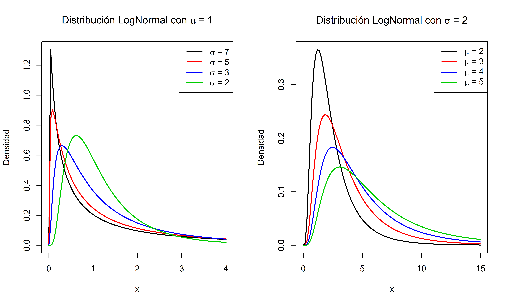
Distribución Gamma
En distintos ámbitos interesa modela fenomenos que involucren conteos y tiempos al mismo tiempo. Hasta ahora hemos visto una aproximación con las distribuciones Exponencial y Poisson, siempre y cuando los parámetros sean proporcionales. ¿Qué pasaría si esto no se cumple?
Conocer el comportamiento de muchos fenómenos que relacionen el tiempo supervivencia (vida util) entre un número de ocurrencias de un evento, se de gran interés. En este caso es muy importante conocer una distribución que nos permita conocer las probabilidades, un valor esperado y una variabilidad de la ocrurrencia de el evento de interés y para ello vamos a considerar la siguiente distribución.
Esta distribución es usualmente usada en el análisis de superivencia, en confiabilidad y demás áreas que tienen un enfoque relacionado en observar el tiempo de falla o de vida de una persona, duración de productos industriales, tiempo que transcurre un número de personas en una fila.
Recuerde que la función Gamma está dada por:
\[\Gamma(\alpha)=\int_{0}^{\infty}x^{\alpha-1}e^{-x}dx \qquad x>0,\quad a>0 \]
Sea \(X\) una variable aletoria continua tal que \(X\sim Gamma(\alpha,\beta)\). Así la f.d.p está dada por:
\[f_{(\alpha,\beta)}(x)= \frac{1}{\Gamma(\alpha)\beta^{\alpha}}x^{\alpha-1}e^{-x/\beta} \quad \alpha,\beta,x>0\]
El parámetro \(\alpha\) se le conoce como de escala y se puede interpretar como el número necesario de veces que se debe realizar un experimento hasta observar el evento de interés hasta un tiempo \(t\), por ejemplo se requieren 2 ciclos de un proceso para que una pieza falle.
Por otro lado \(\beta\) se le conoce como un parámetro de forma y se interpreta como el número de ocurrencias en una unidad de tiempo o intervalo específico, por ejemplo 3 piezas falla cada 100 horas.
La probabilidad de llegar hasta un valor de x \(P(X<x)\) es decir, la f.d.a es:
\[P(X<x)=\int_{0}^{x}\frac{1}{\Gamma(\alpha)\beta^{\alpha}}t^{\alpha-1}e^{-t/\beta}dt \quad \alpha,\beta,t>0\]
\[M_{x}(t)=(1-\beta t)^{-\alpha}, \quad t< \frac{1}{\beta}\]
Entonces \(E[x]=\alpha \beta\) y \(\text{Var}[X]=\alpha\beta^{2}\).
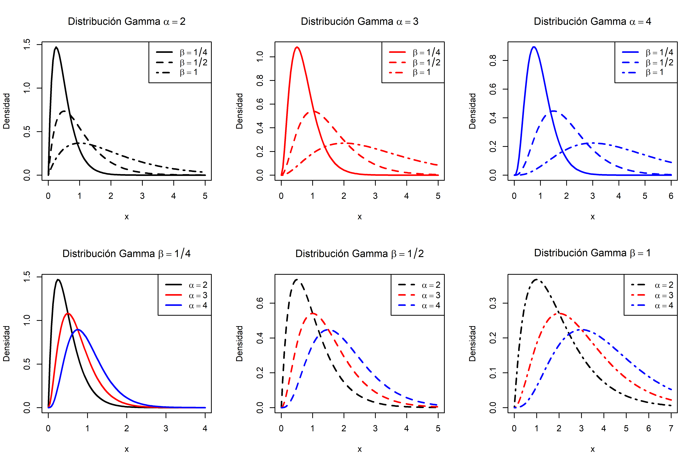
Distribución Beta
En muchos casos no es posble encontrar proporciones constantes en un fenómeno como el caso de una distribución uniforme, sin embargo hay una distribución que nos permite darle forma y controlar ciertos parámetros para obtener una f.d.p que es “conocida” y tiene una forma matematicamente cerrada, a esta distribución se le conoce como la distribución Beta.
Hoy en día la distribución beta ha tomado mucha importancia en el campo de la estadística bayesiana tomándose como distribución a priori para modelar proporciones por ejemplo de una distribución binomial, realizar estimaciones de una prevalencia o para modelar índices de riesgos.
Sea \(X\) una v.a continua tal que \(X\sim Beta(\alpha,\beta)\) con dominio solo para \(x\in[0,1]\)
Cuya f.d.p viene dada por:
\[f_{(\alpha,\beta)}(x)= \frac{\Gamma(\alpha+\beta)}{\Gamma(\alpha)\beta^{\alpha}}x^{\alpha-1}(1-x)^{\beta-1} \quad \alpha,\beta>0; \quad 0<x<1\]
La probabilidad de estar entre \(a\) y \(b\) con \(0<a<b<1\) será:
\(P(a<X<b)= \int_{a}^{b} \frac{\Gamma(\alpha+\beta)}{\Gamma(\alpha)\beta^{\alpha}}x^{\alpha-1}(1-x)^{\beta-1}dt \quad \alpha,\beta>0; \quad 0<x<1\)
La probailidad de llegar hasta un valor x \(P(X<x)\) la f.d.a se calcula como:
\(P(X<x)= \int_{0}^{x} \frac{\Gamma(\alpha+\beta)}{\Gamma(\alpha)\beta^{\alpha}}t^{\alpha-1}(1-t)^{\beta-1}dt \quad \alpha,\beta>0; \quad 0<t<1\)
\[M_{x}(t)=1+\sum_{k=1}^{\infty}\left(\prod_{r=0}^{k-1}\frac{\alpha+r}{\alpha+\beta+r}\right)\frac{t^{k}}{k!} \]
Entonces \(E[X]=\frac{\alpha}{\alpha+\beta}\) y \(\text{Var}[X]=\frac{\alpha \beta}{(\alpha+\beta)^{2}(\alpha+\beta+1)}\).

Distribución \(\chi^2\)
La distribución de Pearson, llamada también ji cuadrada(o) o chi cuadrado(a) (\(\chi^2\)), es una distribución de probabilidad continua con un parámetro \(r\) que representa los grados de libertad de la variable aleatoria.
\[ f(x)= \begin{cases}\displaystyle \frac{1}{2^{r/2}\Gamma(r/2)}\,x^{(r/2) - 1} e^{-x/2}&\text{para }x>0,\\ 0&\text{en otro caso} \end{cases} \]
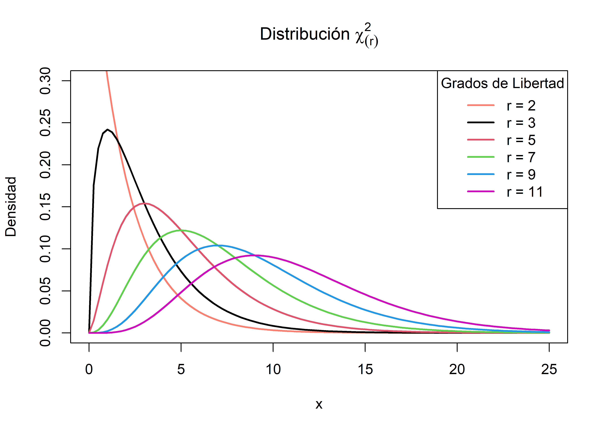
Distribución t-student
La distribución t-de Student es una distribución de probabilidad que surge del problema de estimar la media de una población normalmente distribuida cuando el tamaño de la muestra es pequeño. Su f.d.p está dada por:
\[f(x) = \frac{\Gamma\left(\dfrac{\nu + 1}{2}\right)}{\Gamma\left(\dfrac{\nu}{2}\right)\sqrt{\pi\nu}\sigma} \left[1+\frac{1}{\nu}\left(\frac{x-\mu}{\sigma}\right)^2\right]^{-\tfrac{\nu+1}{2}}\]
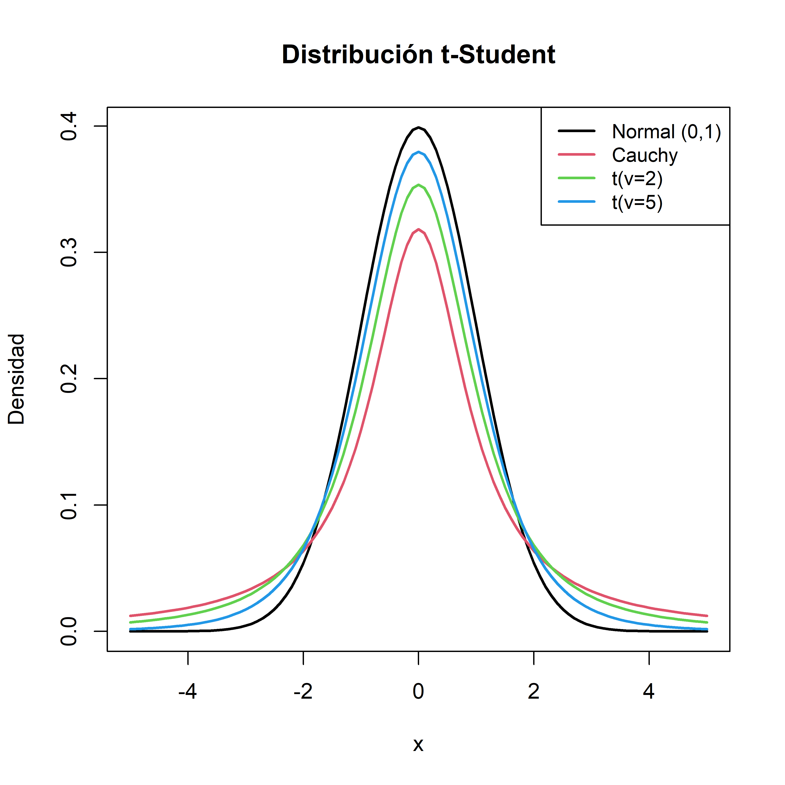
En esta gráfica podemos apreciar la realción que existe entre las distribuciones Cauchy, t-de Student y la Normal Estandarizada. Se observa que la distribución t-de Student con \(v = 1\) grado de libertad es una distribución Cauchy la cual es la más achatada y presenta las colas mas pesadas en comparación las demás distribuciones presentes en la gráfica. Además se puede evidenciar que a medida que aumentan los grados de libertad en la distribución t, ésta tiende a la Normal.